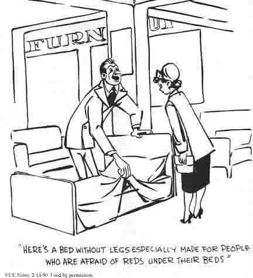
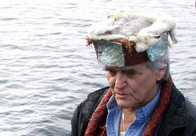
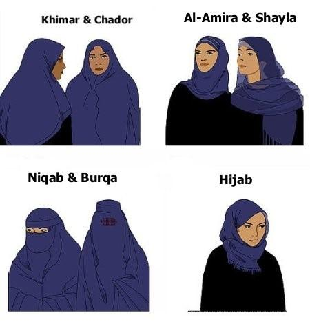
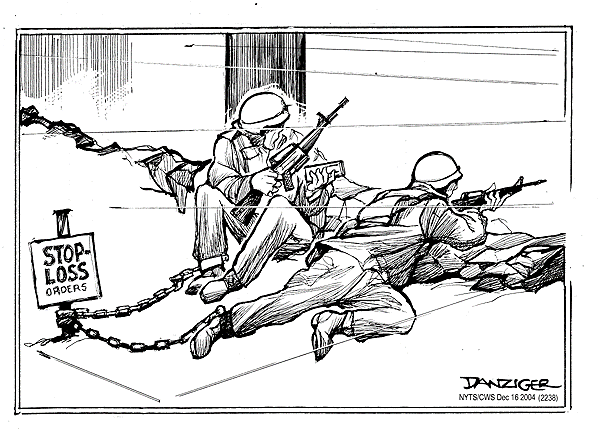
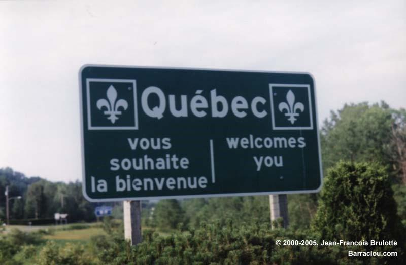
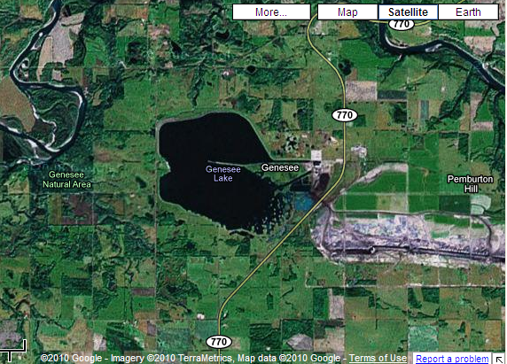

Unit 5 Introduction One of the features that liberalism and many other ideologies have in common is the goal of improving the lives of all people.
Big ideaTo what extent are the principles of liberalism viable?
Unit overview
Learn / Read
Unit 5 Introduction
One of the features that liberalism and many other ideologies have in common is the goal of improving the lives of all people. Whereas fascism tended to promote the advancement of a single national group at the expense of others, communism, at least in theory, had as its objective the creation of a world in which all people would be equal and would enjoy a reasonable standard of living.
Many other ideologies have at their heart some goal of bettering humanity, whether it be economically, socially, spiritually, or in some other way. Where liberalism and other ideologies often differ, however, is in defining what constitutes the betterment of the human condition and how such betterment should be achieved. This difference has been and continues to be the source of conflict between nations that champion liberalism and nations or groups that favour other ideologies.
The conflicts that have arisen between liberal democracies and their rivals have frequently resulted in hardship and misery for humankind. At least once such a conflict took humanity to the brink of self-destruction.
The challenge the citizens of liberal democracies face is how to approach liberalism’s ideological rivals. This issue raises questions like the following:
Should ideological rivals be ignored? If so, what are the risks of doing so?
Should attempts be made to engage those who resist liberal principles in an effort to convince these peoples of the advantages of liberalism? What if such approaches are rejected?
Should liberalism be imposed on other nations and societies like medicine is sometimes imposed on a patient who needs the medicine but is unwilling to take it? What are the potential costs of a tactic like this?
These are critical questions that you, as a citizen of a liberal democracy, must consider. How your government chooses to interact with those who reject liberalism can potentially have a significant impact on your own freedom and security.
In this unit you will explore some of the history and issues surrounding this clash of ideologies. When finished, you should be able to provide your own informed response to the unit question:
How should conflicts between opposing ideologies be resolved?
Watch / Listen
Podcast connection
Use this podcast before the lesson questions. Listen for details that help answer the related issue question: To what extent are the principles of liberalism viable?
Clash of Ideology Podcast
Podcast companion for Cold War conflict, competing ideological systems, and the pressure those conflicts place on liberal principles.
Section 1 Introduction In this section you will examine a pivotal twentieth-century conflict that arose between nations supporting communism and those advocating liberal democracy following the end of World War II.
Big ideaTo what extent are the principles of liberalism viable?
Section 1: Conflict, Security, and the Cold War
Learn / Read
Section 1 Introduction
In this section you will examine a pivotal twentieth-century conflict that arose between nations supporting communism and those advocating liberal democracy following the end of World War II.
In this section you will answer the following question:
How did conflict between opposing ideologies impact the world following World War II?
Learn / Read
In This Section
In this section there are two lessons.
In each lesson you will have opportunities to
• learn about the events and concepts associated with the ideological conflict that followed World War II • reflect on the impact that ideological conflict has on the nations and peoples involved.
Outcomes
In this section you will
analyze how ideological conflict shaped international relations after the Second World War
analyze the extent to which the practices of political and economic systems reflect principles of liberalism
analyze perspectives on the rights, roles and responsibilities of the individual during times of conflict
You will continue to develop the following skills and processes:
engage in active inquiry and critical and creative thinking
apply historical and geographic skills to bring meaning to issues and events
use and manage information and communication technologies critically
conduct research ethically using varied methods and sources; organize, interpret, and present your findings; and defend your opinions
communicate ideas and information in an informed, organized, and persuasive manner
Section Glossary
alignment: a situation in which countries share a similar ideology and foreign policy
In an alignment, the foreign policy is often guided by a dominant nation.
brinkmanship: a diplomatic approach that involves escalating a conflict in the hope that the other side will back down first
cold war: a conflict, without an actual war, characterized by tension and competition between the principle adversaries
containment: a policy or collection of polices aimed at stopping the spread of a particular ideology
détente: a period of lessening of tensions
deterrence: a defence strategy that consists of having sufficient military resources to make an attack by an aggressor likely to result in the aggressor’s destruction
dissuasion: The French policy of maintaining a nuclear arsenal for national defence
espionage: spying
expansionism: a policy of spreading ideological and political influence beyond the status quo
hot war: a war that involves actual combat between military forces; the opposite of a cold war
iron curtain: the physical and ideological divide between the liberal democracies of the West and the nations under the domination of the Soviet Union
McCarthyism: the term given to the movement to root out and expose potential communists within American society during the mid-1950s
satellite state: a previously independent nation that has fallen under the control or ideological influence of a larger, more powerful state
sphere of influence: the group of nations that are subject or receptive to the domination, guidance, or influence of a superpower
summit: a meeting between two or more heads of state
superpower: a nation with sufficient economic and military resources to have significant global influence
Watch / Listen
Podcast connection
Use this podcast before the lesson questions. Listen for details that help answer the related issue question: To what extent are the principles of liberalism viable?
Clash of Ideology Podcast
Podcast companion for Cold War conflict, competing ideological systems, and the pressure those conflicts place on liberal principles.
A Most Dangerous Dichotomy Get Focused A dichotomy is defined as a split between two entities that are polar opposites of one another.
Big ideaTo what extent are the principles of liberalism viable?
Section 1: Conflict, Security, and the Cold War
Learn / Read
Get Focused
A dichotomy is defined as a split between two entities that are polar opposites of one another. After the defeat of fascism and Nazism in World War II, supporters of liberalism and communism started to compete for the hearts and minds of people around the globe.
Many of the world’s nations began to ally themselves with either the United States, the world’s most powerful liberal democracy, or the Soviet Union, the first nation to put communism into practice. The resulting dichotomy would shape international relations for most of the second half of the twentieth century.
Through most of that period, an ideological competition played out in a variety of arenas—social, scientific, economic, and military. While the world’s two dominant ideological rivals, the U.S. and the U.S.S.R, never engaged in large-scale military action against one another, their battle to advance their respective “ism” nonetheless took a great financial and human toll around the globe.
Throughout the conflict, the citizens of the world had to live with the possibility of global annihilation should the ideological rivalry erupt into a shooting war.
In this lesson you will explore the following question:
What were the characteristics of the ideological conflict that took place following World War II?
Learn / Read
Explore
Read
Turn to Chapter 7 in Perspectives on Ideologies. Read from page 232 to page 257.
You will encounter the following terms in your reading: alignment, brinkmanship, cold war, containment, détente, deterrence, dissuasion, espionage, expansionism, hot war, iron curtain, satellite state, sphere of influence, summit, and superpower.
Video - On the brink of nuclear war - the Cuban Missile Crisis
Watch this 5-minute video about the Cuban Missile Crisis.
Check Your Understanding
Test your knowledge of the terms, people, and events associated with the Cold War by completing the Cold War Crossword Puzzle. Revisit the textbook to get the answers for any blanks you miss.
Big idea
Lesson Summary
The Cold War was an almost half-century-long conflict that split much of the world along ideological lines. Following the defeat of Hitler and Mussolini, the Soviet Union and the United States both sought to draw the devastated nations of Europe into their respective spheres of influence.
As the conflict intensified, more and more nations were caught up in the conflict. Rival military alliances formed—NATO in the West, the Warsaw Pact in the East. The superpowers worked to spread their influence beyond Europe as well. While many nations aligned themselves with one ideological camp or the other, some tried to remain non-aligned despite considerable pressure from the superpowers.
The overriding fear throughout the Cold War was that some incident or the perceived threat of an imminent attack would drive one side or the other to unleash its nuclear arsenal. The 1962 Cuban Missile Crisis, for example, drew the world perilously close to a nuclear war.
In the aftermath of the Cuban Missile Crisis, steps were taken to improve communication between the superpowers. By the 1970s, détente was taking hold. While the Cold War was by no means over, its intensity had somewhat diminished.
The Cold War gave rise to a number of ironies. The U.S., the leading liberal democracy in the world, often appeared to abandon the basic principles of liberalism in its efforts to fight communism. The CIA helped stage coups, sponsored assassination attempts, and covertly influenced the outcome of elections in other democratic nations.
Many of the nations within the sphere of influence of the U.S. were not liberal democracies at all. Rather, they were authoritarian dictatorships that often used weapons and training supplied by the United States to brutalize their own populations rather than to fight communism.
For its part, the Soviet Union was finding that many individuals, indeed entire nations, wished to escape the communist “utopia” that had been imposed upon them. The Soviets often had to resort to walls, barbed wire, tanks, and soldiers to maintain the integrity of the communist alliance.
Perhaps the greatest irony of the Cold War was that both sides were armed with a massive arsenal of powerful weapons they could never use. Conflict on the scale of World War I and World War II was precluded by the fact that no nation could really win in an all-out nuclear exchange. The nuclear arms race had, in this rather strange way, brought about a degree of global stability.
Despite this degree of stability, the Cold War would, as you will discover in the next lesson, take a considerable toll on both the Soviet and the American nations, both domestically and abroad.
Going Beyond / Enrichment
View the film Thirteen Days. As with many Hollywood films that depict historical events, the producers of Thirteen Days may have taken some dramatic licence with events to make the film more entertaining. That said, the film is in large part an accurate portrayal of the events surrounding the Cuban Missile Crisis.
It is sometimes difficult for the average person to get a real sense of the destructive power of nuclear weapons. The film Trinity and Beyond: The Atomic Bomb Movie documents the development of ever-powerful atomic and hydrogen bombs. The abundant footage of American and Soviet nuclear tests provides testament to the awesome and terrifying effects of nuclear weapons.
If you cannot obtain a copy of Trinity and Beyond: The Atomic Bomb Movie, entering the keywords “DOE historical nuclear tests films” into an Internet search engine should lead you to the U.S. Department of Energy’s online archive of nuclear test footage.
Watch / Listen
Podcast connection
Use this podcast before the lesson questions. Listen for details that help answer the related issue question: To what extent are the principles of liberalism viable?
Clash of Ideology Podcast
Podcast companion for Cold War conflict, competing ideological systems, and the pressure those conflicts place on liberal principles.
Repercussions of the Cold War Get Focused Many observers point to the Cold War not only as a period of tension but also as a period of relative international stability.
Big ideaTo what extent are the principles of liberalism viable?
Section 1: Conflict, Security, and the Cold War
Learn / Read
Get Focused
Many observers point to the Cold War not only as a period of tension but also as a period of relative international stability. The United States and the Soviet Union had considerable sway over the nations in their respective spheres of influence. While supporting their ideological allies, the superpowers attempted to ensure the actions of those allies did not draw one another into direct military confrontation. In some sense, the Cold War was like a chess match in which the superpowers battled one another by influencing the actions of other nations.
Although circumstances precluded a direct military conflict between nuclear-armed states, the Cold War, nonetheless, was costly in human lives and in many other ways. Some would also suggest, however, that humanity benefitted from this half-century-long competition for the hearts and minds of the world’s people.
In this lesson you will explore the following question:
How did the Cold War impact the nations involved in the conflict?
Learn / Read
Explore
Read
In Perspectives on Ideologies, read from the heading “Global, Social and Personal Implications of International Conflict” on page 261 to the end of page 269.
Voices
“As a kid growing up in the Cold War, I didn’t think of nuclear war all the time, but every once and awhile, it would creep into your thoughts. You’d look in the phone book and, where now there’s a page that tells you what to do in case of a tornado, back then there was a page telling you what to do in case of a nuclear attack.
Sometimes, when it rained really heavily, water somehow would get inside an air raid siren near our house and it would malfunction and start to sound. The first time it happened I was really scared. I was just seven or eight years old, but I knew what that siren could potentially mean. After my dad explained what was likely causing the siren to go off, I was mostly reassured. Still, lying in bed at night listening to the rain beating against the house and this siren wailing in the distance was a disturbing experience for a child. You knew it probably just the rain, but if it wasn’t . . .”
Alberta Resident
Watch & Listen
Click here to watch Duck and Cover. This a short U.S. educational film from the Cold War era.
Pause and Reflect
Can you think of an international crisis or ideological clash that undermined your sense of security as a child? Can you think of ways in which clashing ideologies impact your life or your sense of security in the present?
Learning Activity
Scavenger Hunt
In this learning activity you will use the Internet to develop a greater understanding of the impacts the Cold War had on nations, their populations, and the world.
Download and complete the Cold War Scavenger Hunt by using an Internet search engine to collect the requested pieces of information. As you find each item, record the information in the “Response” column on the worksheet.
Spend enough time reading about each item to get a sense of how the item relates to the Cold War. Think about the significance of the item. Then, in the appropriate column, record your insight with regard to how the item demonstrates the impact the Cold War had on the nations involved, their citizens, or the world in general. Finally, rate the item’s impact as positive, neutral, or negative; and briefly explain your reasoning.
The Vietnam Conflict had a profound effect on the individuals who fought in that war and on American society as a whole. A variety of films have been made that attempt to explore and explain what happened in Vietnam. Some of the best include Platoon, Dear America: Letters Home from Vietnam, We Were Soldiers, Path to War, and Good Morning Vietnam, although there are many more from which to choose. Be forewarned, however, that many of these films contain graphic violence, coarse language, and other content that some people might find offensive.
The Cuban Missile Crisis was the most publicized of the crises that almost led to nuclear war, but it was by no means the only such crisis. An Internet search provides a variety of websites that list incidents that brought the world close to accidental nuclear war. These incidents make for interesting and terrifying reading.
Some would say that the seeds of many contemporary ideological conflicts were planted in the Cold War. The recent conflict in Afghanistan, for example, has roots in Cold-War-era policies of the Soviet Union and the United States. The film Charlie Wilson’s War provides a dramatized account of the United States’ role in driving the Soviets out of Afghanistan, a country that the U.S. itself would invade two decades later.
Big idea
Lesson Summary
The impact of the Cold War was far-reaching, encompassing the political, economic, scientific, social, environmental, and even psychological realms.The superpowers involved themselves in numerous smaller conflicts around the world by providing arms, and sometimes troops, to assist allies in their spheres of influence. This was often costly—both financially and in terms of human lives.
The superpowers also devoted much of their gross national products to the expansion and maintenance of both conventional and nuclear arsenals. Beyond the financial cost, testing associated with nuclear weapons programs scattered radioactive fallout over much of the world. Citizens of both the Western and Soviet Bloc nations had to live with the knowledge that nuclear Armageddon was a real and continuing threat.
The Cold War was not without its positives, however. As the superpowers and their allies each tried to demonstrate their ideological superiority, advances resulted in science, technology, and other areas of human endeavour.
Technological advances also meant both sides were developing capabilities to intercept and destroy incoming nuclear missiles before they reach their target. The only way to overcome anti-ballistic missiles was to overwhelm the enemy's defences with an even larger arsenal of nuclear weapons, which would result in another arms race. In 1972, both sides signed the Anti-Ballistic Missile (ABM) Treaty, limiting anti-ballistic missiles as well as agreeing to limit the number nuclear missiles, with more arms control treaties to follow, all to prevent another expensive nuclear arms race and reduce the likelihood of nuclear war.
As you have learned in previous lessons, communism eventually collapsed in the Soviet Union and in most of its allied nations. This collapse signalled the end of the Cold War.
Some have suggested that, in the end, communist nations capitulated because their system could not continue to compete militarily with the West and still provide a decent standard of living for their citizens. Others contend that a new Soviet leadership simply saw the uselessness of the world’s two most powerful nations spending billions to create weapons that, if ever used, would spell the end of humanity.
Regardless of the interpretation, the end of the Cold War brought to a close one of the greatest ideological conflicts of the twentieth century. Liberal democracy, it appeared, had prevailed. The new century, however, would see other ideologies emerge to compete with and challenge liberalism.
The end of the Cold War also resulted in the eventual demise of important arms control treaties, such as the end of the ABM Treaty in 2002, when the USA uniltaerally withdrew from the treaty in efforts to develop anti-missile systems.
Glossary
McCarthyism: the term given to the movement to root out and expose potential communists within American society during the mid-1950s
Watch / Listen
Podcast connection
Use this podcast before the lesson questions. Listen for details that help answer the related issue question: To what extent are the principles of liberalism viable?
Clash of Ideology Podcast
Podcast companion for Cold War conflict, competing ideological systems, and the pressure those conflicts place on liberal principles.
Section 1 Summary In this section you explored the history of the Cold War. During the period of the Cold War, policies of expansionism and containment drew the United States into...
Big ideaTo what extent are the principles of liberalism viable?
Section 1: Conflict, Security, and the Cold War
Big idea
Section 1 Summary
In this section you explored the history of the Cold War. During the period of the Cold War, policies of expansionism and containment drew the United States into a conflict that manifested itself in proxy wars and support for liberation movements.
The advent of nuclear weapons made direct conflict between the superpowers potentially disastrous, a point driven home by the brinkmanship surrounding the Cuban Missile Crisis.
As the opposing ideological blocs built ever-larger nuclear arsenals, it became apparent that any nuclear war would likely result in Mutually Assured Destruction. As a result, the idea of a nuclear war became unthinkable. Eventually, both sides made efforts at détente in an attempt to decrease tensions.
The Cold War, though it precluded direct military conflict between the U.S. and the U.S.S.R., had produced a variety of smaller hot wars. Vietnam, for the Americans, and Afghanistan, for the Soviets, proved to be military and economic quagmires that sucked up lives and money. Involvement in these conflicts caused many Americans and citizens of other liberal democracies to question the rationale and the methods their governments used to defend and promote liberalism abroad.
Domestically, fear of communism and nuclear attack plagued American citizens, particularly during the 1950s. Movements like McCarthyism saw many law-abiding citizens persecuted for their political beliefs and personal associations. Ironically, these actions were taken under the pretext of defending liberal democracy.
The Cold War ended with the disbanding of communism in the late 1980s and early 1990s. In the end, communism had proved as capable of destroying lives and creating national and international upheaval as hot war.
You have familiarized yourself with the policies and actions taken by the superpowers during the Cold War and the subsequent impacts on the superpowers’ populations and other peoples. The Cold War helped to shape the world you live in today. As you will see in the next section, the Cold War’s echoes can be heard in some of the ideological conflicts that face liberal democracies today.
Cold War Review Activity - Radio Interview
In this activity you will do a little role-playing. Your name is Terry Knotwreel, a fictitious U.S. civil servant. You have just written a book about the Cold War, and you’re on a tour promoting your work. You’ve been to book signings, appeared on local televisions talk shows and, in this case, dropped into a radio station for an interview.
After introducing you, the interviewer is going to ask you a variety of questions related to Cold War events and policies. Your challenge is to provide informed, well-reasoned answers from the point of view of someone who has an in-depth knowledge of the period of time surrounding the Cold War.
Listen to the interview here (start at 0:40 to skip the Intro):
Use the knowledge you gained in this section of the course to provide insightful answers. Record your answers in the spaces underneath each question and retain in your study notes. If unsure of something, review the relevant lessons.
Turn it into evidence
Build your evidence note
Save one useful idea, source detail, or question from this lesson so it can support later source work or position writing.
Section 2 Introduction At the end of the Cold War, many people in liberal democracies thought they were witnessing the dawn of an era of peace and prosperity around the globe.
Big ideaTo what extent are the principles of liberalism viable?
Section 2: Liberalism After Conflict
Learn / Read
Section 2 Introduction
At the end of the Cold War, many people in liberal democracies thought they were witnessing the dawn of an era of peace and prosperity around the globe. With the collapse of communism, the last major ideological rival to liberalism had apparently been defeated. Liberal economic practices, democracy, and individual rights and freedoms could now be extended around the globe without resistance and interference from a powerful ideological rival.
As in the past, however, the principles of liberalism were not embraced by all. Still today, individuals and groups in some parts of the globe see liberalism as largely a product of the Western world. The movement to extend liberal economic, social, and political ideals beyond their present geographic borders has ignited new conflicts and poured fuel on some old fires.
In this section you will answer the following question:
How do differing ideological perspectives contribute to conflict in the twenty-first century?
Learn / Read
In This Section
In this section there are two lessons.
In each lesson you will have opportunities to
explore the manner in which ideological conflict can impact nations and societies
evaluate perspectives on, and approaches toward, managing ideological conflict
Outcomes
In this section you will
appreciate various perspectives regarding the promotion of liberalism within political and economic systems
analyze the extent to which modern liberalism is challenged by alternative thought
evaluate the extent to which the principles of liberalism are viable in the context of contemporary issues
exhibit a global consciousness with respect to the human condition and world issues
evaluate the extent to which ideology should shape responses to contemporary issues
You will continue to develop the following skills and processes:
engage in active inquiry and critical and creative thinking
engage in problem solving and conflict resolution with an awareness of the ethical consequences of decision making
apply historical skills to bring meaning to issues and events
use and manage information and communication technologies critically
conduct research ethically using varied methods and sources; organize, interpret, and present your findings; and defend your opinions
recognize and responsibly address injustices as they occur in your school, community, Canada, and the world
communicate ideas and information in an informed, organized, and persuasive manner
Section Glossary
ethnocentric: a perspective that holds that one's own culture is superior
humanitarianism: a doctrine that promotes improvement to the standard of living or quality of life of others, often through outside intervention
self-interest: consideration of one’s personal position, often without regard for the welfare of others
theocracy: a government run by religious leaders and guided by religious doctrine
war on terror: a term used to describe actions taken to combat global terrorism in the wake of the 9/11 attacks on the United States
Turn it into evidence
Build your evidence note
Save one useful idea, source detail, or question from this lesson so it can support later source work or position writing.
Establishing Liberalism’s Reach Get Focused To casual observers, the downfall of communism seemed to suggest that liberalism would now be the world’s dominant ideology.
Big ideaTo what extent are the principles of liberalism viable?
Section 2: Liberalism After Conflict
Learn / Read
Get Focused
To casual observers, the downfall of communism seemed to suggest that liberalism would now be the world’s dominant ideology. In fact, the Cold War had for so long focused attention on communism as a rival to liberal democracy, that other ideologies that challenged liberal notions had received little attention. That all changed on a warm, September day in 2001, when hijacked American airliners slammed into the World Trade Center in New York City, the Pentagon in Washington, D.C., and a farmer’s field in Pennsylvania.
The 9/11 attacks, as they became known, brought Western liberal democracies into conflict with various factions supporting militant Islam. The attacks also brought to the forefront the issue of whether the world’s societies should conform to liberal ideals and, if so, how liberalization should be accomplished.
In this lesson you will explore the following question:
To what extent should liberalism be the dominant ideology in the twenty-first century?
Learn / Read
Explore
In his book, The Clash of Civilizations, political scientist Samuel Huntington suggests that the major conflicts of the twenty-first century will not be along ideological lines; instead, Huntington argues, conflicts will be along cultural and religious lines. However, if one views ideology as a set of beliefs and values, then the beliefs and values that guide the actions of groups like Al Qaeda, the Taliban and ISIS/DAESH are indeed an ideology.
Some analysts and security experts refer to this ideology as Islamo-fascism, trying to somehow link radical Islamic factions with more familiar anti-liberal ideologies that have sprung out of Western society. Others have criticized this labelling as simplistic, inaccurate, and offensive to many Muslims. It is important to be aware that many Islamic authorities have criticized Al Qaeda, the Taliban and ISIS/DAESH for their violent acts, restrictions on education and other rights for women, and for their interpretation of Islam.
The rise of groups like Al Qaeda, the Taliban and ISIS/DAESH has, however, highlighted the fact that many people in the world view liberalism as a product of the European Enlightenment and of Western societies. Liberalism’s fundamental principles often place the ideology at odds with the longstanding cultural, religious, and legal traditions of various societies.
The Universal Declaration of Human Rights
In 1945, at the end of World War II, the United Nations was set up with the primary goal of putting an end to war. While the U.N. was intended to provide a forum for all nations to discuss and confront important issues facing the world, its structures and the realities of the post-war world arguably gave western nations considerably more influence than those of, for example, African and Asian nations.
A few years later, in 1948, the General Assembly of the U.N. adopted the Universal Declaration of Human Rights, a document outlining the fundamental rights to which all people of the world should be entitled.
Learning Activity
Human Rights
In this activity, you will develop an understanding of the extent to which liberal ideals have served as the model to be followed globally and how that may lead to conflict. There are three parts to this activity. Read through the entire activity before you begin.
Part 1 Save a copy of the Human Rights worksheet to your computer. Do an Internet search to find a copy of the Universal Declaration of Human Rights. Review the document carefully. Complete Part 1 of the Human Rights worksheet.
Part 2
Your objective is to develop a familiarity with sharia law. Conduct an Internet search using some of the following search terms:
“sharia law”
“sharia law explained”
“sharia law Ontario”
“sharia law Britain”
“sharia law Saudi Arabia”
“sharia law hadd”
“women and sharia law”
"5 myths about sharia law"
Caution: Critical Thinking Area
Sharia law is controversial. Attitudes toward sharia law’s implementation vary even among those who abide by the law the extent to which states practice it varies. Be advised that some critics of sharia law may devolve into ethnocentric and/or racist rants on the websites you visit. Keep your critical thinking cap on, and assess the goals and credibility of the websites you visit (see Evaluating Websites in Student Tools for help with this critical thinking skill for weeding out unreliable sources).
Sharia law shares many of the basic principles of human rights as found in the Universal Declaration of Human Rights. There are some important differences, however.
Now that you have familiarized yourself with sharia law, complete Part 2 of the worksheet. As you complete Part 2, remember that interpretations and implementations of sharia law can vary from society to society. Be as specific as possible with your examples to ensure clarity.
Part 3
Complete Part 3 of the worksheet. Use what you have learned in Parts 1 and 2 to support your response, and provide examples to justify your response.
Consider discussing your work with a friend, a parent, or someone else. You may have to give your discussion partner a short tutorial regarding the Universal Declaration of Human Rights and sharia law. The insights you obtain from your discussion may give you both new perspectives on the question.
When you have completed this, place your work in your notes for future reference and diploma exam prep.
Learn / Read
Extremism and Terrorism: Al Qaeda, the Taliban and ISIS/DAESH
Afghanistan has a turbulent history. Britain invaded Afganistan three times, in the 19th and early 20th centuries, to protect its control of India and to prevent Russian influence in the region. The British learned the hard way that Afghans were a very independent and strong willed people who resisted the British occupations. After regaining full independence in 1919, Afghanistan enjoyed friendly relations with the Soviet Union.
A coup by communist forces overthrew the Afghan government in 1978. This new communist government was in turn overthrown by rival communists in 1979. The Soviet Union used this political instability as a pretext to support yet another coup and this new Soviet-backed Afghan government "invited" the Soviet Union to invade Afghanistan to restore stability (the Soviet Union was concerned about American influence in the region). The Soviet occupation of Afghanistan began in December 1979 and was one of the "hot" proxy wars during the Cold War.
An Islamic movement, called the Mujahideen, was opposed to communist and Soviet control of Afghanistan and they resisted the Soviet occupation of their country. The Mujahideen were supported by the USA and the military dictatorship in Pakistan. Pakistan is Afghanistan's neighbour and was an ally of the USA during the Cold War. As part of America's efforts to resist Soviet expansionism, the USA supported the Mujahideen with military training and weapons because of the Mujahideen's anti-communist stance. Although the Soviets and the Americans did not fight directly, there was an ongoing war between the Soviet Union and the Mujahideen forces. This war lasted from 1979 to 1989, when Gorbachev withdrew all Soviet forces from Afghanistan (the war was a drain on the Soviet economy and Gorbachev wanted to end the general worldwide confrontation with the USA in order to proceed with democratic and political reforms in the Soviet Union).
Even though the Americans provided aid to the Mujahideen and promised to rebuild Afghanistan after the war was over, they failed to fulfill their promise. What was left behind was a war-ravaged country with well-trained and well-armed soldiers, many of whom arrived from other muslim countries to help the Afghans resist the Soviet occupation. One of these Mujahideen soldiers fighting the Soviet occupation was Saudi-born Osama bin Laden, the infamous al-Qaeda leader behind the 9/11 attacks on the World Trade Center in New York City.
Some of the Mujahideen supported a political party known as the Taliban. After the Soviet Union left Afghanistan, a new war ravaged Afghanistan again in the 1990s - this time a civil war between rival Afghan factions and warlords. The Taliban was the faction that gained control of most of the country in 1996 (with support from Pakistan's secret services). The Taliban ruled Afghanistan according to its own extremist interpretations of the teachings in the Qur’an (sometimes spelled Koran), the sacred text of Muslims.
The Taliban’s radical interpretations of this text are rejected by most Muslims throughout the world. Just as most Protestant Christians reject the Ku Klux Klan and their radical interpretation of Protestant Christianity.
Another Muslim extremist group, known as al-Qaeda and led by Osama bin Laden, shared similar ideologies with the Taliban and were allowed to operate and open terrorist training camps in Afghanistan. Al-Qaeda declared a holy war—a jihad—on the countries of the West and the illegitimate dictatorships and authoritarian monarchies in the Muslim world - many now supported by the Western liberal democracies, and the USA in particular (eg. Egypt, Saudi Arabia; Jordan, Qatar, Bahrain and others). Al-Qaeda would like to see all Muslim countries governed by their extremist interpretation of the Qur'an. Al-Qaeda uses terrorism to strike whenever possible to fight for its cause.
The Attack on the World Trade Center
On September 11, 2001, the World Trade Center (sometimes called the Twin Towers) was attacked in New York City. The attack, often referred to as 9/11, was linked to Osama bin Laden and al-Qaeda.
Why would anyone want to attack buildings in New York City? In one way or another, 9/11 was a terrorist blow to the United States, on its home soil, intended to protest the United States’ continuing support of Israel and what is regarded to be interference in Middle-East affairs. Al-Qaeda and the Taliban feared the expansion of Western influence and ideology and the threat this would cause to the structure of Muslim societies.
The large majority of Muslims throughout the world reject the extremist teachings of the Taliban and al-Qaeda. Many Muslim countries grant equal rights to all Muslims in society. In some Muslim countries, women hold government positions, are university-educated, and function as equal members of society. Most of these countries, however, are not liberal democracies. Many of them are authoritarian monarchies or dictatorships but support capitalism and the extent of political freedoms vary from country to country. Under Taliban rule, however, women are not granted equal rights and opportunities. Women are to stay at home, raise children, and maintain the household.
The World Trade Center in New York dominated the skyline and represented the economic backbone of the United States. Al-Qaeda’s goal was to disrupt the everyday lives of Americans and to bring jihad to the Americans’ homeland. They also wanted to lure the USA into a long drawn out war in Afghanistan. The Mujahideen believed it was their war against the Soviet Union that caused the economic collapse of that superpower. Al-Qaeda believed they could use the same formula to defeat the other superpower, the USA, by drawing it into a new war in Afghanistan. How better to lure the Americans into a fight than by attacking the economic centre of their universe? Al-Qaeda did not have an army, so the group had to use other catastrophic means to disrupt American life.
The world was now more aware of al-Qaeda and of two global enemies: terrorism and extremist ideologies.
Learn / Read
Responses to Terrorism
Immediately after the 9/11 attacks, President George W. Bush vowed to bring the terrorists who attacked the United States to justice. Bush’s "war on terrorism" took place in various locations.
The War in Afghanistan
The coalition forces, including Canada and other allies, led by the American government, hoped to liberate Afghanistan from the Taliban government and to find Osama bin Laden, who was believed to be hiding in the mountains of Afghanistan, and destroy Al-Qaeda in Afghanistan. Starting in October of 2001, daily bombings of the area failed to help locate bin Laden. It was thought that bin Laden was now hiding in the lawless tribal areas of neighbouring Pakistan.
For many years there had been rumours of bin Laden’s hiding places, but he remained elusive until he was finally located and assassinated by American special forces on a raid on his house in a Pakistani city - 10 years after the 9/11 attack.
Meanwhile, the Taliban resistance in Afghanistan proved to be stronger than predicted. The coalition forces fought the Taliban for 10 years and worked hard to establish a democratically elected government in Afghanistan. Under NATO, the Canadian military aimed to bring security, services, assistance, and democracy to Afghanistan, while fighting the Taliban. Canada ended its participation in the war in Afghanistan in 2014. The US and some other allies remain in Afghanistan to this day. In 2019-2020, the Trump presidency has engaged in negotiations with the Taliban to end the war.
The Iraq War
The United States and some allies (not Canada) invaded Iraq in March 2003. The main goal was to find Saddam Hussein and the “weapons of mass destruction” it was believed he possessed. Bush claimed Iraq aided al-Queada.
Project Shock and Awe was President George W. Bush’s military strategy. The coalition forces would enter Iraq with such force that the government would collapse, and a new democratically elected government would be elected.
Saddam Hussein was eventually found and arrested. President Bush and the other leaders expected that a change of government would reduce the threat of worldwide terrorism and end extremist attacks and give Western oil companies access to Iraq's massive oil reserves. It was later proven that Iraq did not possess nuclear or biological weapons and played no role in 9/11, the reasons given for going to war in the first place.
American forces had hoped to be in Iraq for a short period of time. However, the U.S. was not able to stop the resistance forces that still supported Saddam Hussein. Al-Qaeda members from all over the Muslim world went to Iraq to support the resistance to the American occupation. Sunni and Shia Muslims fought each other and the Americans. The war that was meant to establish a liberal form of government in a quick and decisive manner lasted from 2003-2011. By 2013, a new war had erupted with an even more extremist group rising out of the ashes of the US-Iraq war: ISIS/DAESH (see below) fighters had siezed control over large parts of Iraq and Syria and now with affiliates in other countries. Is more military intervention the solution?
Many terrorists have declared a jihad on liberal democracies. They attack liberal values and seek to create a new world order. What liberal values do these extremist ideologies and terrorism threaten?
Canada and ISIS in Iraq and Syria
The Islamic State in Iraq and Syria (ISIS or ISIL, or just IS and also known as DAESH - acronym for the Arabic translation of ISIS) is a breakaway group from Al Qaeda in Iraq, and even more ruthless. In 2013-2014, they siezed large parts of Iraq in the aftermath of the US war in Iraq and expanded into Syria as well during the chaos of a civil war in Syria between the authoritarian Syrian government and reformers (one of a series of popular uprisings against authoritarian governments known as the Arab Spring, beginning with the Tunisian Revolution in late 2010). By 2014, ISIS controlled a vast swathe of territory stretching across Iraq and Syria.
ISIS has also established itself in other countries, like Afghanistan, Pakistan, Libya, Egypt, Algeria, Nigeria, and Yemen.
Video - Iraq, Syria and ISIS Explained
Watch this brief video backgrounder: "Iraq, Syria and ISIS Explained in Less than Five Minutes".
Keep in mind, ISIS lost almost all of the territory it had gained in Syria and Iraq by March 2019, after this video was made.
How should your government respond to international problems like this? What did Canada do?
Air war: In November 2014, under Prime Minister Stephen Harper, Canada joined the USA and other allies, including the Iraqi Armed Forces and Kurdish militias, in the war in Iraq against ISIS, deploying CF-18 jets to bomb ISIS targets in support of the Kurdish militia and Iraqi Armed Forces in Iraq only, at first, but later in Syria too. Plus a small mission on the ground training Iraqi armed forces.
Boots on the ground: In February 2017, Prime Minster Justin Trudeau cancelled Harper's bombing mission in Iraq. However, Trudeau significantly expanded the number of Canadian soldiers on the ground to train and advise Iraqi and Kurdish security forces. Canadian armed forces personnel were also operating a field hospital to treat Iraqi and Coalition forces. Despite the cancellation of the CF-18 mission, Canada continued to deploy an aerial refueuling tanker aircraft for mid-air refueling of other Coalition aircraft doing the bombing; a surveilance aircraft; and helicopter contingent to support Canadian ground forces in their training and advisory role.
Is there a third option? Can you connect these options and your view to ideological perspectives studied in the course?
Internet Research - John Stuart Mill on international relations
Take a few minutes to do some internet research: What did John Stuart Mill say about non-intervention?
Can you connect the ideas of other liberal philosophers you studied in the course to the question of imposing liberalism on illiberal countries? Can you apply any of their ideas to the international level? What is liberalism when it comes to international relations?
For a different perspective, see this excerpt from the Statement of Principles by the Project for a New American Century:
"America faces an opportunity and a challenge: Does the United States have the vision to build upon the achievements of past decades? Does the United States have the resolve to shape a new century favorable to American principles and interests? ... We seem to have forgotten the essential elements of the Reagan Administration's success: a military that is strong and ready to meet both present and future challenges; a foreign policy that boldly and purposefully promotes American principles abroad; and national leadership that accepts the United States' global responsibilities."
PNAC was a group of US right-wing neo-conservatives supporting George W. Bush during his presidency. They encouraged a US invasion of Iraq.
Read
There are a variety of perspectives on whether liberalism should be introduced to societies in which it is not the dominant ideology. To further broaden your understanding of these perspectives, read from “Bringing Liberalism to the World” on page 318 to “Questions for Reflection” on page 327.
Make a list of the reasons discussed for extending liberalism around the globe, and then note one practical example of each. These notes will come in handy later!
You will come across the following terms in your reading: humanitarianism, self-interest, war on terror.
Pause and Reflect
Think back to what you learned in the past about imperialism and globalization. In light of history, how might some non-Westerners view efforts to establish liberalism in their societies if it does not already exist there?
Big idea
Lesson Summary
Despite the general demise of ideologies like fascism and communism, liberalism is not without ideological competitors in today’s world. Many societies subscribe to other ideologies, which, while they may have some commonalities with liberalism, still differ from liberalism in important ways. Efforts to spread the value system of liberalism beyond its current geographic boundaries are not without controversy.
For some, liberalism is seen as a product of Western culture—a set of foreign values that Western democracies wish to impose on the rest of the world in the same way that European nations attempted to impose their cultures on others during the Age of Imperialism. For others, liberalism represents something of a Trojan horse—a means by which the West can open up the rest of the world for economic exploitation under the pretext of freeing people from oppression.
Liberalism is sometimes fraught with problems in societies where liberal democracy has recently been established. For example, elections in countries with already-stressed relations between tribal, cultural, or religious groups can lead to instability. In such situations it is arguable that the introduction of liberalism results in more harm than good. Can you think of any examples?
For some, the desire to spread liberalism is based in humanitarianism. Some humanitarians seek to gain for others around the globe the liberty, equality, and justice for which many groups within existing liberal democracies fought for so long. If one accepts this goal as worthy, the question then becomes how to achieve the goal. This is a question to be explored in the next lesson.
Glossary
ethnocentric: a perspective that one's own culture is superior
humanitarianism: a doctrine that promotes improvement to the standard of living or quality of life of others, often through outside intervention
self-interest: consideration of one’s personal position, often without regard for the welfare of others
war on terror: a term used to describe actions taken to combat global terrorism in the wake of the 9/11 attacks on the United States
Going Beyond - Islamic State and War in Iraq and Syria
Take advantage of these linked resources to learn more about the conflict with ISIS/DAESH:
Read about Canada's military deployment to Iraq in 2014 in this Globe and Mail article. What is Canada's justification for going to war? What are Canada's motives?
For a different perspective on the effectiveness of military intervention, see this article argueing why the West should not participate in this war.
Syria background:This Prezi provides a general background leading up to the conflict in Syria. Note: this Prezi does not mention IS specifically, only "opposition groups", which includes both moderates fighting for more representative government and ultranationalists like the Islamic State.
Complete the 3 lesson questions below while the ideas from this lesson are fresh. Your responses save with the rest of your course notes.
1
Define neoconservatism:
2
Neoconservatism is a right-ward shift away from government intervention, towards traditional values, and is similar to classical liberalism. Why do some neo-conservatives dislike how diplomacy was used to end the Cold War?
3
What does foreign policy mean, and what kinds of foreign policies do neo-conservative nations tend to agree upon?
Saved locally
Turn it into evidence
Build your evidence note
Save one useful idea, source detail, or question from this lesson so it can support later source work or position writing.
Learning from Past Conflicts Get Focused The major ideological conflicts of the twentieth century were costly to humanity.
Big ideaTo what extent are the principles of liberalism viable?
Section 2: Liberalism After Conflict
Learn / Read
Get Focused
The major ideological conflicts of the twentieth century were costly to humanity. The defeat of the fascist powers in World War II cost upwards of 60 million lives. As you have learned in earlier lessons in this section, the Cold War also exacted a significant toll on the countries involved. As liberal democracies face new ideological rivals in the twenty-first century, it will be important to draw on the lessons of the past.
In this lesson you will explore the following question:
To what extent do historical approaches to resolving ideological conflict need to be altered in order to meet the challenges facing the world in the twenty-first century?
Learning Activity - Explore
The USA and others are currently applying economic sanctions against North Korea to influence change in that country's policy of developing nuclear weapons.
Conduct an internet search and explore this and other methods used by liberal democracies to encourage illiberal countries to change their ways.
In your notes, make recommendations regarding how liberal democracies should respond to these challenges. Justify your recommendation using examples from history and/or current events. Be sure to consider the risks involved with your option and why it is a better choice than other options considered.
Use the table in this Managing 21st Century Conflict document to organize your analysis of the options open to liberal democracies in your case study.
See, for example, North Korea; Iran; Cuba; Venezuela; Syria; Afghanistan; Iraq; Taliban or ISIS (Daesh). Analyze the alternative options open to liberal democracies in your case study.
Also evaluate the challenges presented by nations and groups that reject liberalism.
Big idea
Lesson Summary
The twenty-first century has already produced a variety of ideological rivals for nations seeking to advance liberalism. Some of these rivals represent what remains of ideological blocs that were prominent in the last century. Others have gained importance as their actions have brought them into increasing conflict with the world’s dominant liberal democracies.
Opinions regarding how to address ideological conflicts in the new century are as varied as the conflicts themselves. Some support using armed forces to overthrow regimes that reject liberalism and installing in their place governments committed to liberal ideals.
Others suggest that peaceful engagement of authoritarian regimes will bring about liberalization over the long term without the use of force. Still others argue that it is folly to attempt to introduce or impose liberal ideas in societies that have no cultural or political tradition of liberalism. Falling within these positions is a range of other approaches to the issue.
Studying the history of the last century can provide some insight into the potential advantages and pitfalls of the many approaches to expanding the world’s adoption of liberalism. One of the clear lessons of the past is that ideological conflict is very complex. For liberal democracies, efforts to prevail in such conflicts often carry the risk of betraying the very principles liberal democracies seek to protect and promote.
Try it
Practice questions
Complete the 3 lesson questions below while the ideas from this lesson are fresh. Your responses save with the rest of your course notes.
1
Which event brought World War II to an end?
2
Summarize the sequence of events that led to the internment of Japanese Canadians during the Second World War.
3
During the First World War, Ukrainians who were interned were immigrants. In contrast, how was the situation a little bit different for the Japanese Canadians?
Saved locally
Turn it into evidence
Build your evidence note
Save one useful idea, source detail, or question from this lesson so it can support later source work or position writing.
Section Summary In this section you have explored the challenges presented by efforts to extend liberalism in the contemporary world.
Big ideaTo what extent are the principles of liberalism viable?
Section 2: Liberalism After Conflict
Big idea
Section Summary
In this section you have explored the challenges presented by efforts to extend liberalism in the contemporary world. You have examined how liberal ideals may clash with the cultural values of some societies, and you have considered the degree to which liberal values should be considered universal values.
You have also discovered that efforts to expand liberalism to other parts of the world can be very complex. Some approaches to introducing liberalism where it is not the dominant ideology may require key principles of liberalism to be compromised in the short term in order to achieve long-term goals.
Warfare and economic sanctions can often threaten the right to life and security for civilians caught up in ideological conflicts between governments. A gradual approach to implementing liberalism can mean that some people suffer years of human-rights abuses while they wait for their societies to accept liberalism. The question of whether efforts to expand liberalism are rooted in ethnocentrism and western economic interests must also be considered.
Armed with what you learned in Section 2 and the knowledge you gained studying the Cold War, you should now be prepared to address the key question of this unit:
How should conflicts between opposing ideologies be resolved?
Big idea
Unit Summary
The recent history of liberalism has been very much defined by conflict. In the decades following World War II, an intense rivalry developed between the world’s liberal democracies and the world’s communism nations. As each camp sought to strengthen and expand its ideological influence, they confronted each another in a variety of ways.
Each ideologically based group of nations tried to prove it's technological, economic, and societal superiority. Each provided monetary and military support to liberation movements and to nations within its sphere of influence.
The United States and the Soviet Union both became embroiled in costly proxy wars. Direct confrontation between these two nuclear-armed giants was generally avoided, but the rare instances that did occur reinforced the point that such a conflict would likely spell the end of humanity.
The Cold War ultimately ended when the Soviet leadership decided its people would be better served by embracing liberal democracies than by preparing to destroy them. The weaknesses of the communist system soon became apparent and the communist empire largely faded into history.
While they could claim victory over communism, for the sake of expediency, liberal democracies had taken some actions during the Cold War that appeared to violate liberal ideals. In an effort to keep as many nations in their sphere of influence as possible, the United States and its allies had either openly supported or turned a blind eye to various brutal regimes around the globe
This fact, combined with increasing economic and cultural globalization dominated by the west, spawned growing resentment toward liberal democracies in many parts of the globe. A simmering conflict between liberalism and militant Islam burst wide open with the terrorist attacks of September 11, 2001.
This conflict and those with other ideological rivals present a significant challenge to liberal democracies. Such conflicts have caused many westerners to re-evaluate the extent to which liberal democracies should try to promote the ideals of liberalism beyond their present boundaries. For others, new conflicts have reaffirmed the importance of broadening the reach of liberalism.
For you, as a citizen of a liberal democracy in the twenty-first century, the task will be to apply lessons learned from the ideological conflicts of the past to conflicts in the present and in the future.
Using what you have learned here and what you will continue to learn if you choose to be an active and engaged citizen, you should be able to provide your own well-informed response to the key question posed in the module introduction: How should conflicts between opposing ideologies be resolved?
Moreover, you are a step closer to being able to take your own position on the fundamental issue of the course: To what extent should people embrace an ideology?
Study Help
Click here to open a copy of notes you can expand on when studying the course material from this Unit.
Turn it into evidence
Build your evidence note
Save one useful idea, source detail, or question from this lesson so it can support later source work or position writing.
Unit 6 Introduction Communism is viewed as a failure by most people because attempts to put it into practice seldom lived up to the lofty ideals set out by Marx and Engels.
Big ideaTo what extent are the principles of liberalism viable?
Unit overview
Learn / Read
Unit 6 Introduction
Communism is viewed as a failure by most people because attempts to put it into practice seldom lived up to the lofty ideals set out by Marx and Engels. Some people level the same criticism at liberalism. Despite its obvious advantages, liberalism is not without its flaws.
In this module you will begin to explore some of the challenges faced by liberal democracies as they endeavour to live up to the high ideals of liberalism.
Such challenges abound. Democratic governments are supposed to represent the people and respond to their wishes, yet many electoral systems and governmental structures do this imperfectly at best. As well, questions continue to be raised about the morality of imposing liberalism on groups within society which already have their own well-established social and governmental structures.
Periodically, liberal societies must contend with the chaos of war and terrorism. In such circumstances, governments may choose to suspend rights in an effort to more adequately deal with perceived threats to national security. The suspension of rights in a democracy is seldom achieved without criticism, however. Even in peacetime, there can be conflict over the interpretation of rights. Governments can use their power to marginalize critics, who may, in turn, push the boundaries of the law in an effort to make their voices heard.
The new century has brought additional challenges. Global climate change has put liberalism’s traditional promotion of economic freedom into conflict with those who worry about the environmental consequences of such freedom. Others have chosen this time to challenge established moral precepts, seeking to live their lives and sometimes to end their lives, on their own terms and without interference from government or the majority of people it represents.
In this module you will explore these issues in greater detail. When you are done, you should be well-equipped to address the question for this module:
What challenges are presented in attempting to put liberal theories into practice?
Turn it into evidence
Build your evidence note
Save one useful idea, source detail, or question from this lesson so it can support later source work or position writing.
Section 1 Introduction In this section you will explore the extent to which liberal democracies can reflect illiberal thought and practice.
Big ideaTo what extent are the principles of liberalism viable?
Section 1: Democracy and Liberal Principles
Learn / Read
Section 1 Introduction
In this section you will explore the extent to which liberal democracies can reflect illiberal thought and practice. You will begin to develop an understanding of the various perspectives regarding the promotion of liberalism within different political systems. You will also study the challenges of liberalism, such as issues regarding majority representation in government and the imposition of liberal principles on groups which have different ideological perspectives.
In this section you will be answering this question:
To what extent are the form and function of liberal democracies illiberal?
Learn / Read
In This Section
In this section there are three lessons.
In these lessons you will have opportunities to
Analyze Political Cartoons and Images
examine how liberal democratic governments can often adopt illiberal practices
reflect on how the imposition of these illiberal ideals influence the contemporary world in which you live
Outcomes
In this section you will
analyze political cartoons
analyze the extent to which liberal democracies reflect illiberal thought and practice.
appreciate various perspectives regarding the promotion of liberalism within political and economic systems
analyze why the practices of governments may not reflect principles of liberalism
analyze perspectives on the imposition of the principles of liberalism
explore the extent to which governments should reflect the will of the people
analyze the extent to which modern liberalism is challenged by alternative thought
evaluate the extent to which governments promote individual and collective rights
As well, you will continue to develop the following skills and processes:
engaging in active inquiry and critical and creative thinking
applying historical and geographic skills to bring meaning to issues and events
critically using and managing information and communication technologies
conducting research ethically using varied methods and sources; organizing, interpreting, and presenting your findings; and defending your opinions
applying skills of metacognition, reflecting upon what you have learned and what you need to learn
recognizing and responsibly addressing injustices as they occur in your school, community, Canada, and the world
communicating ideas and information in an informed, organized, and persuasive manner
Section 1 Glossary
electoral college: a body of electors chosen by the voters in each state to elect the president and vice president of the U.S. (a plurality or first-past-the-post electoral system).
enfranchisement: granting people the rights of citizens, especially the right to vote
Eurocentric: an ideal emphasizing the values and perspective of European tradition and institutions, often to the detriment of other people’s values
illiberal: pertaining to aspects of liberal democracy which suppress citizens’ civil liberties
Indian Act: an act of Canadian Parliament passed in 1867, which dealt with the rights of First Nations people who signed treaties or became registered citizens under the Act
paradigm: a set of assumptions, concepts, or values which shape the way an individual views the world
plurality voting: or first-past-the-post, in which a candidate wins a seat based on the most votes when 3 or more candidates are running.
popular vote: the percentage of the total votes cast received by a candidate or a political party
proportional representation: an electoral system in which candidates of a political party are elected on the basis of the share of the popular vote they receive in an election
Residential Schools: aschool system created under the Indian Act which attempted to assimilate Aboriginal people
responsible government: a democratic system in which the executive branch must have the support of the majority of the legislative branch in order to remain in power
White Paper: an official government document released in 1969, which attempted to further assimilate First Nations, Metis, and Inuit peoples of Canada.
Watch / Listen
Podcast connection
Use this podcast before the lesson questions. Listen for details that help answer the related issue question: To what extent are the principles of liberalism viable?
How the Canadian Government Works Podcast
Podcast companion for democratic institutions, liberal principles, and the way Canadian government channels political decision-making.
Flaws in the Fabric of Democracy Get Focused In earlier units you learned about how nations such as Canada and the United States have interpreted liberal principles and integrated them into their governmental structures.
Big ideaTo what extent are the principles of liberalism viable?
Section 1: Democracy and Liberal Principles
Learn / Read
Get Focused
In earlier units you learned about how nations such as Canada and the United States have interpreted liberal principles and integrated them into their governmental structures. It is through these democratic governments that the will of the majority is to be represented and followed.
In a perfect world the task of following the general will of the people sounds simple enough, but the Earth does not always follow theory in perfect order. Sometimes democratic governments do not completely live up to principles of liberalism.
In this lesson you will examine how liberal democratic governments may adopt illiberal practices which undermine their citizens’ influence over their own government. You will examine the strengths and weaknesses of the parliamentary and republican systems, as well as various electoral systems and you will assess how well these systems really reflect the will of the majority.
In this lesson you will be examining the question:
To what extent do democratic governments represent the will of the majority?
Learn / Read
Explore
From previous lessons you have recognized that authoritarian governments may sometimes employ democratic mechanisms to solidify their power. You have also learned that true adherence to the principles of liberalism requires more than the implementation of basic democratic mechanisms. The fundamental notion of majority rule can often be inconsistent with liberalism’s promotion of minority and individual rights. Actions or policies that exist within the context of democracy but ignore the basic principles of liberalism are referred to as illiberal.
How do the concepts of democracy and liberalism differ?
Learning Activity
Building on What You Already Know
Now that you have a better understanding of illiberalism, you can begin to analyze the extent to which the form and functions of liberal democracies may actually be illiberal. Since you will be building off of your previous knowledge of liberal democracies developed in past units, it is worthwhile to quickly take stock of related concepts you already understand. One way to do this is through a graphic organizer called a KWL chart.
Check Your Understanding
Check your previous knowledge about liberal democracies by brainstorming what you have already learned about them. Record that information in the first column of the KWL chart titled “Liberal Democracy Knowledge.” Then take a couple of minutes and brainstorm what you would further like to discover about liberal democracies. Record that information on the chart in the second column for what you want to learn about. Finally you will refer back to this KWL chart at the end of this lesson to complete the third column. Fill in what you have learned in the lesson. When the first two columns are completed, please place the KWL chart in your portfolio so that at the end of the lesson you can find it again and complete the third column.
Feel free to share your charts in the Student Activities discussion forum.
Check Your Understanding
Before you delve deeper into your exploration of illiberalism, it is also important to review some key glossary terms you have learned in past modules which will also be used in this lesson. Complete the “Principles of Democracy Review Crossword.”
The issue under exploration in this lesson is, “To what extent do democratic governments represent the will of the majority?” To better understand the issue, one must first address what is meant by “the will of the people.”
One perspective is that the “will of the people” means simply what the majority wants. This can be most easily determined by employing direct democracy but, as you have learned, this can be difficult to implement in large nations. You can still see elements of direct democracy in action today through referendums and plebiscites.
It is also possible to ensure that the will of the people will be heard by utilizing electoral systems which guarantee this principle, such as proportional representation. Under proportional representation,the representation of political parties in a government is based on the percentage of popular vote. This guarantees that every vote counts and majority rule will be followed. This system often fosters greater democratic participation and a more informed electorate. The graph on the right suggests the Conservative majority in 2011 would have been a minority government if we had Proportional Representation. How would today's distribution of seats in Parliament look if we had proportional representation at the last election? Why did Justin Trudeau drop this election platform promise? Why are traditional mainstream political parties reluctant to consider proportional representation? The USA has a similar issue. Would Donald Trump have been elected if the US election was decided by popular vote instead of the Electoral College?
Another perspective holds that it is the job of an elected representative government to determine the best course of action for its citizens. The citizens, through elections, give their representatives the power to decide what is in their nation’s best interest. By having an accountable government—one which allows for free and periodic elections as well as checks and balances—citizens can ensure that these representatives are working in their constituents’ best interests. If the citizens believe these representatives can no longer serve their interests, the electors can remove the representatives and elect new ones. Does this mean governments can ignore the will of the people between elections, assuming they have a clever way to regain support before the next election?
Finally, many people hold the opinion that the needs of society are better served by a well-informed elite group of citizens who are better qualified to undertake the task of governing than the majority. Though many agree that this type of system can lead to a more efficient democratic process, this type of elitism can lead to a tyranny of the minority where a small group of people suppress the interests of the majority of citizens who live in that country. Is there an elite group now with a disproportionate share of influence today?
Watch, Listen and Reflect
The presidency for the USA has its own "first past the post" system.
Watch "What is the U.S. electoral college and how does it work?" Discover for yourself the complicated world of American politics:
This system means it is possible for a candidate to win the presidency through the electoral college vote, while at the same time losing the popular vote.
Five US Presidents won their presidency through the electoral college vote after their opponent won the popular vote:
1824 - J.Q. Adams
1876 - R.B. Hayes
1888 - B. Harrison
2000 - G.W. Bush
2016 - D. Trump
Richard Nixon and Bill Clinton won the presidency in elections where neither themselves nor their opponents won a majority of the popular vote (but they did win more votes than any of their opponents).
Does the electoral college represent the will of the people? Does it protect minorities from majority rule?
Pause and Reflect
Examine the following quotation.
“People often say that, in a democracy, decisions are made by a majority of the people. Of course, that is not true. Decisions are made by a majority of those who make themselves heard and who vote—a very different thing.”
Use this quotation as well as your previous knowledge of liberal democracies to answer the following questions in your notes:
To what issue about liberal democracies does this quote refer?
What difficulties do governments have when trying to determine what is in the best interests of the general will?
Is it important for governments to always reflect the will of the people, or do government decisions sometimes need to go against the will of the people?
Read
Please read pages 335 to 353 (up to the section titled “Consensus Decision Making”’) in Perspectives on Ideologies. Please ensure that you pay attention to the various “Pause & Reflect” questions as well as the visuals in the columns of each page. These items will help you further develop your understanding of illiberal aspects of democracy.
How does this cartoon reflect the differences between first past-the-post electoral systems versus proportional representation? Which side of the debate does the artist support?
How does this cartoon relate to the concept previously discussed: "will of the people"?
Check Your Understanding
Please refer back to your KWL chart from earlier in the lesson. Now that you have explored the various strengths and weaknesses of contemporary liberal democracies, finish the third column (learned) in your KWL organizer by recording five new aspects of democracy that you did not previously know. If possible, compare your chart with that of a peer. Add any ideas or concepts you may have missed. Put your completed KWL chart back into your portfolio for your instructor to review if necessary.
Big idea
Lesson Summary
In this lesson you have reviewed a variety of approaches used in liberal democracies to attempt to represent the will of the majority. You have examined the parliamentary system used in Canada and the republican style of government found in the United States.
You have also become aware of the strengths and weaknesses of each of these systems and how each system endeavours to address the representation of the majority. Lastly, using what you have learned, you developed and articulated your opinion regarding the extent to which the Canadian government represents the will of the majority.
Glossary
illiberal: pertaining to aspects of liberal democracy which suppress citizens’ civil liberties.
electoral college: a body of electors chosen by the voters in each state to elect the president and vice president of the U.S. (a plurality or first-past-the-post electoral system).
plurality voting: or first-past-the-post, in which a candidate wins a seat based on the most votes when 3 or more candidates are running.
popular vote: the percentage of the total votes cast received by a candidate or a political party
proportional representation: an electoral system in which candidates of a political party are elected on the basis of the share of the popular vote each political party receives in an election
Watch / Listen
Podcast connection
Use these podcasts before the lesson questions. Listen for details that help answer the related issue question: To what extent are the principles of liberalism viable?
How the Canadian Government Works Podcast
Podcast companion for democratic institutions, liberal principles, and the way Canadian government channels political decision-making.
Open the practice set when you are ready to turn this lesson into usable evidence. Your responses save with the rest of your course notes.
Practice questions29 questions
1
Party discipline means representatives are expected to vote with their party. What happened to David Kilgour when he opposed his party's position on the GST?
2
In the United States, each congress member and senator vote by conscience, not by what their party tells them. Which system do you like better, and why?
3
Define consensus decision making.
4
If you were a Member of Parliament, would you be willing to compromise your own short-term interest so that party goals could be achieved?
5
What is a caucus in Canada's Parliament, and why does party discipline matter inside a caucus?
6
Define what a democracy is.
7
What is the difference between a direct democracy and a representative democracy?
8
What are referendums and plebiscites and how do they relate to the liberal principles of direct democracy?
9
How do representative democracies ensure that those elected remain true to the will of the people?
10
Define responsible government.
11
In the "first-past-the-post" system, how many people from a riding get to become a Member of Parliament?
12
How many Members of Parliament are elected?
13
How many Senators does Canada have?
14
How does Canada get new senators?
15
The United States uses a system of checks and balances to make sure that no one branch of the government becomes too powerful. What are two examples of the checks and balances system?
16
What are the two chambers of the United States Congress?
17
What is similar between how the United States' House of Representatives congress representatives are elected, and how Canadian members of parliament are elected?
18
How often are American representatives elected?
19
How often are American senators elected?
20
How often are Canadian senators elected?
21
How does the American system avoid clearing out an entire batch of senators all at once?
22
Is it absolutely necessary for the American president to approve a bill? Explain.
23
Explain how proportional representation works.
24
Canada has a single-member constituency system, one representative for each riding. Sweden has a multi-member constituency system, with more than one representative for each riding, from different parties, and they assign WHO the representatives will be AFTER the election determines how many seats each party will receive. Which system do you think best represents the "will of the people"?
25
What are the three different approaches that Canada, United States, and Sweden use in their attempts to reflect the will of the people?
26
Explain what consensus decision making involves, and what do proponents and opponents argue are the advantages and disadvantages of this system?
27
The Will of the People: How do direct democracies and representative democracies differ in how they reflect the "will of the people"? What are the strengths and vulnerabilities of each?
28
Consensus Decision-Making: How does consensus differ from a simple majority vote? In what scenarios is consensus highly effective, and when might it paralyze government action?
29
Tyranny of the Majority: How can democratic systems inadvertently oppress minority groups, and what mechanisms (like the Charter of Rights and Freedoms) exist to prevent this?
Saved locally
Turn it into evidence
Build your evidence note
Save one useful idea, source detail, or question from this lesson so it can support later source work or position writing.
Bad Medicine: Imposing Liberal Ideology Get Focused Strictly defined, liberal democracy is the rule of the majority with consideration for minority rights.
Big ideaTo what extent are the principles of liberalism viable?
Section 1: Democracy and Liberal Principles
Learn / Read
Get Focused
Strictly defined, liberal democracy is the rule of the majority with consideration for minority rights. This does not mean that the needs of all citizens are always served or guarantee that the representatives chosen to represent you will share the same values and beliefs that you hold. Though the basic concept of individual rights is generally accepted by citizens in Canada and prescribed in the Charter of Rights and Freedoms, the nature of the individual rights to be protected and the degree of protection they should receive is often open to interpretation and debate.
Consequently, an ideology may sometimes be imposed on minority groups who may not share the beliefs or values of the majority. Some people may characterize such impositions of ideology as illiberal. In this lesson you will examine the extent to which liberal principles have been imposed on the First Nations, Metis, and Inuit peoples in Canada.
In this lesson you will explore this question:
To what extent should liberal principles be imposed on those people who may not share them?
Learn / Read
Explore
Journal/Notes
Individuals all have a certain way of looking at the world. This is sometimes referred to as their paradigm. People are taught and absorb their individual paradigms through their cultures and way of life. A person’s paradigm is constantly shifting as priorities change. As an example of this, reflect on the following questions:
How have your thoughts about the world changed since the beginning of your high school career?
Has your way of looking at the world in general shifted and become much more complex? Are some things not as simple as they used to be?
What accounts for changes in your paradigm?
Since many Western liberal democracies such as Canada and the United States were most recently settled by Europeans, these nations have tended to adopt Eurocentric models of governance and society. These governmental structures embraced by European settlers used classical liberal principles such as the importance of the individual as the basis for the creation of laws and society.
But this model did not always represent the ideological perspectives of all of Canada’s citizens. To a large extent, the voices of Canada’s First Peoples (First Nations, Metis, and Inuit) were ignored when governmental structures and mechanisms were established.
Read
In order to develop an understanding of Aboriginal world views and how these views may differ from the perspectives promoted by liberal ideology, read pages 294 and 295 in Perspectives on Ideologies. Carefully consider the Pause and Reflect questions which are posed to you in the right and left columns.
When you complete the noted passage, read the section entitled “Voices: Returning Government Powers to First Nations Peoples” on page 296 of the textbook. Discuss the issues addressed in the questions with a fellow student, a parent, or a friend. What principles of liberalism does this article address? Can you connect this reading to the conflict in the Wet'suwet'en Nation?
Assimilation
Though aboriginal ideology and the liberal principles adopted by the Canadian government often conflicted, the government attempted to impose a Eurocentric model of liberalism on aboriginal peoples through policies such as the Indian Act, enfranchisement, Residential Schools, and the White Paper. All of these policies were aimed at assimilating First Peoples in Canada and left a legacy of cultural destruction from which many aboriginal societies are still recovering, as evidenced in the Truth and Reconciliation Commission Report.
Analyze and interpret the political cartoon
Editorial cartoon by Graeme MacKay, The Hamilton Spectator – Wednesday June 3, 2015
What is the artist trying to say here? Record your interpretation in your notes.
Journal/Notes
Before you move ahead, reflect on what you have learned in earlier modules about classical and modern liberalism. Consider the following questions.
How has the paradigm of liberalism shifted over the past 200 years?
What has played a role in causing this shift?
What have been the results of this shift in the liberal paradigm?
Was the handling of the Wet'suwet'en blockades evidence of reconciliation?
What does reconciliation look like to you?
Read
Please read pages 304 to 316 in Perspectives on Ideologies starting at the heading “Aboriginal Experiences of Liberalism in Canada,” and ending at the description of the Potlatch. As you read these pages, make a concept map to help you recognize key points and concepts. Refer to the "Concept Map example" to see an example of how to start the process.
As you work through the reading, ensure that you pay attention to the various “Pause & Reflect” questions on the right or left column of each page as well as the visuals in the columns of each page. By thinking about the answers to the questions posed in the margins of the textbook, you will further your understanding of the imposition of liberal ideas on the Aboriginal peoples of Canada.
Discuss
It would be to your benefit to exchange your completed concept map with a peer who has also completed the reading to gain a perspective of how another person reads the same passage. Review each other’s work and discuss potential additions or deletions. Revise your concept map based on your discussion. Place your completed concept map into your portfolio. It will serve as a resource for completing the assignment in this lesson. You may use the Student Activities discussion forum for this.
Big idea
Lesson Summary
In this lesson you explored the concept that not every group within a democratic nation may embrace the Western liberal traditions on which liberal democracy is founded. You did this by examining various Aboriginal perspectives on society and then analyzing how compatible Aboriginal ideals like consensus government are with the principles of modern liberal democracy in Canada.
You have also learned that the differing ideological perspectives held by the Canadian government and the First Peoples of Canada have often led to conflict. You have researched an event that illustrates such a conflict and examined how the opposing groups went about trying to achieve their respective goals.
Based on the knowledge you have gained in this lesson, you should be able to articulate your own response to the inquiry question for the lesson: To what extent should liberal principles be imposed on those people who may not share them?
Glossary
paradigm: a set of assumptions, concepts, or values which shape the way an individual view the world
Eurocentric: an ideal emphasizing the values and perspective of European tradition and institutions, often to the detriment of other people’s values
Indian Act: an act of Canadian Parliament passed in 1867, which dealt with the rights of First Nations people who signed treaties or became registered citizens under the act
enfranchisement: granting people the rights of citizens, especially the right to vote
Residential Schools: a school system created under the Indian Act which attempted to assimilate Aboriginal people
White Paper: anofficial government document released in 1969, which attempted to further assimilate First Nations, Metis, and Inuit peoples of Canada
Watch / Listen
Podcast connection
Use this podcast before the lesson questions. Listen for details that help answer the related issue question: To what extent are the principles of liberalism viable?
Democracy vs Dictatorship Podcast
Podcast companion for comparing liberal democracy with authoritarian alternatives and testing when liberal principles hold under pressure.
Section 1 Summary In this section you were asked to analyze the extent to which the form and function of liberal democracies are illiberal.
Big ideaTo what extent are the principles of liberalism viable?
Section 1: Democracy and Liberal Principles
Big idea
Section 1 Summary
In this section you were asked to analyze the extent to which the form and function of liberal democracies are illiberal. In order to look at this topic in greater detail, you first examined the idea of illiberalism and discovered that democratic governments often employ practices and policies which can be viewed as illiberal.
You also studied the challenges which democratic governments face when trying to respond to the will of the people and examined the advantages and disadvantages different governmental and electoral systems provide in terms of reaching this goal.
You also began to explore the issue surrounding the imposition of liberalism on those who do not necessarily subscribe to it. In the last century, unbridled confidence that the Western liberal tradition represented the pinnacle of ideological evolution led the government of Canada to attempt to dismantle aboriginal governmental and social traditions and replace them with practices that were largely based in Western European thought. The effect was devastating for aboriginal societies and, as you have discovered, has sown the seeds for continual discord and conflict between First Peoples and various levels of government in Canada.
Having now explored a variety of examples of illiberal practice within democracies, you have begun to develop the base of knowledge you will need to address the key question for this unit:
What challenges are presented in attempting to put liberal theories into practice?
Watch / Listen
Podcast connection
Use this podcast before the lesson questions. Listen for details that help answer the related issue question: To what extent are the principles of liberalism viable?
How the Canadian Government Works Podcast
Podcast companion for democratic institutions, liberal principles, and the way Canadian government channels political decision-making.
Section 2 Introduction In this section you will explore how liberal democracies attempt to balance the need for national security and public safety with the protection of individual rights and freedoms.
Big ideaTo what extent are the principles of liberalism viable?
Section 2: Rights, Emergencies, and Dissent
Learn / Read
Section 2 Introduction
In this section you will explore how liberal democracies attempt to balance the need for national security and public safety with the protection of individual rights and freedoms. Through your study of various historical and contemporary examples, you will examine how some liberal democracies have dealt with this dilemma during times of war, internal conflict, and political and social upheaval.
You will also begin to solidify your own perspective regarding how the ideals of liberalism can be protected or compromised by government efforts to maintain law and order.
In this section you will be answering the question:
How should the need for security and freedom be balanced in a liberal society?
Learn / Read
In This Section
In this section there are two lessons.
In each lesson you will have opportunities to
reflect on how the needs for security and freedom must be balanced in a liberal democracy
examine specific historical and contemporary examples of how liberal democratic governments have balanced the need for security and freedom in society
Outcomes
In this section you will
analyze the extent to which liberal democracies reflect illiberal thought and practice
appreciate various perspectives regarding the viability of the principles of liberalism
analyze why the practices of governments may not reflect principles of liberalism
evaluate the extent to which governments promote individual and collective rights
evaluate the extent to which the principles of liberalism are viable in the context of contemporary issues
analyze perspectives on the rights, roles, and responsibilities of the individual during times of conflict
analyze the extent to which modern liberalism is challenged by alternative thought
analyze perspectives on the rights, roles, and responsibilities of the individual in a democratic society
As well you will continue to develop the following skills and processes:
engage in active inquiry and critical and creative thinking
engage in problem solving and conflict resolution with an awareness of the ethical consequences of decision making
apply historical and geographic skills to bring meaning to issues and events
use and critically manage information and communication technologies
conduct research ethically using varied methods and sources; organize, interpret, and present your findings; and defend your opinions
apply skills of metacognition, reflecting upon what you have learned and what you need to learn
communicate ideas and information in an informed, organized, and persuasive manner
Section 2 Glossary
appeasement: giving in to the demands of another
civil disobedience: non-violent protest that takes the form of a refusal to obey a law on the basis that it is unjust
draft: compulsory military service; conscription
defect: to desert a nation or cause in favour of a rival nation
Front de Liberation du Quebec (FLQ): a revolutionary organization which promoted violence to support the creation of an independent Quebec
insurrection: a violent uprising, rebellion, or revolution directed at a government or a similar authority
internment: the confinement of a group of people for political or military reasons
pandemic: an outbreak of disease which has spread to multiple nations in multiple regions of the world
terrorism: the use of violent means to achieve create political goals
War Measures Act: an act of law created by the Canadian government in 1914 to allow rule by decree without the consent of Parliament
Watch / Listen
Podcast connection
Use this podcast before the lesson questions. Listen for details that help answer the related issue question: To what extent are the principles of liberalism viable?
Democracy vs Dictatorship Podcast
Podcast companion for comparing liberal democracy with authoritarian alternatives and testing when liberal principles hold under pressure.
Lesson 1 – Civil Emergencies and Civil Rights Get Focused As you have seen from earlier lessons, democratic governments are often challenged with the task of representing the will...
Big ideaTo what extent are the principles of liberalism viable?
Section 2: Rights, Emergencies, and Dissent
Learn / Read
Get Focused
As you have seen from earlier lessons, democratic governments are often challenged with the task of representing the will of the majority, and this can be very formidable. This is especially true when civil conflict, terrorism,pandemics, or other emergencies arise which test the mettle of elected representatives.
In such situations, the government must balance the individual rights and freedoms of citizens with the need to provide security for the entire nation and its institutions. In this lesson you will be examining the question:
To what extent should rights and freedoms be curtailed during times of conflict or civil emergencies?
Learn / Read
Explore
In order to familiarize yourself with the key issue for this lesson, you will examine three instances in which the Canadian government limited the civil rights of citizens in the name of national security. These are the internment of Germans and Ukrainians living in Canada during WW I (1914-1920), the internment of Japanese people living in Canada during WW II (1939-1945) and the October Crisis of 1970.
Learn / Read
The War Measures Act - prior to October Crisis
The War Measures Act was a law passed in 1914 which allowed for the federal government of Canada, or more specifically, the cabinet, to rule by emergency decree and be able to respond quickly to perceived national threats. The prime minister and cabinet ministers would be allowed to take measures without the support of the House of Commons and Senate. This decree gave the government the power to limit certain rights and freedoms where it was deemed necessary for national security and public order. Prior to 1970, the War Measures Act had only been invoked in response to external threats to Canada.
World War I
In World War l the Canadian government interned persons of German and Ukrainian origin who were living in Canada. Germans were interned because Canada was at war with Germany and it was felt that German-Canadians might harbour a lingering allegiance to Germany that would lead them to commit acts of espionage or sabotage.
Ukrainians were also interned because the Austro-Hungarian Empire, with which Canada was also at war, had ethnic Ukrainian minorities living within its boundaries. Even if they were legitimate citizens of Canada, individuals from both of these groups were labelled as potential threats to national security based solely on their ancestry. They were typically interned in remote camps.
When the war ended, they were eventually released but at that time were provided with no compensation for the time or financial losses that resulted from their internment.
World War II
In World War ll, the federal government interned people of Japanese origin or ancestry. In theory this internment was carried out to prevent acts of sabotage and spying by Japanese-Canadians who might be sympathetic to imperial Japan, with which Canada was at war.
Despite RCMP reports which stated they represented no significant threat to Canada, Japanese-Canadians were labelled as “enemy aliens” on similar concerns that had led to the internment of other groups in World War I. Canadians of Japanese descent were rounded up and sent to camps in the British Columbia interior where they often had to endure very harsh conditions. Public outcry over the cost of camps led the government to use the provisions of the War Measures Act to confiscate the property of the internees and sell it off to help pay for their imprisonment.
The War Measures Act was also used to seize land from and relocate the Kettle and Stony Point Band (now Kettle and Stony Point First Nation) to create a military base (search Ipperwash Crisis).
The Cold War
Just after the end of World War II in 1945, a clerk at the Soviet embassy in Ottawa named Igor Gouzenko defected to Canada. He provided the Canadian government with irrefutable evidence that the Soviet Union was operating a spy ring within Canada. Following Gouzenko’s revelations, the government of Canada used the still in force War Measures Act from WWII to facilitate the arrest, interrogation, and prosecution of suspected communist spies.
The use of the War Measures Act during the two world wars and the Cold War continues to be controversial even today. Years after the wars, survivors and descendants of the Ukrainian and Japanese internments lobbied the government for an official apology and financial redress for infringements of rights that were carried out under the provisions of the Act. Eventually, the Canadian government issued apologies and provided limited monetary compensation to former internees.
Journal/Notes
Should the rights of an individual be suspended on the basis of the national security risk he or she might pose? Is it prudent to arrest and intern individuals based on their cultural, religious, or personal affiliations with groups or nations that threaten national security? What are the risks involved in waiting until there are sufficient legal grounds to arrest a potential spy, saboteur, or terrorist?
Try it
Responding to a Home-Grown Threat - the FLQ and the October Crisis
Before the FLQ, the spectre of terrorism, revolution, or civil war was—for most people living in Canada—a reality which existed primarily in other countries and read about in newspaper headlines. In October of 1970, however, a group of radicals seeking the separation of Quebec from Canada plunged the country into a political and national security crisis that would reverberate for decades.
Beginning in 1963, the Front de Liberation du Quebec (FLQ) carried out violent terrorist acts. Its members had bombed federal government offices and installations in Quebec and funded their activities by carrying out bank robberies. While several people were killed or maimed in bombings and shootouts during this time, even as early as 1963, it was on October 5, 1970 when the FLQ staged their boldest act yet—the kidnapping of British diplomat James Cross.
The day after the kidnapping of Cross, the FLQ released a document outlining the motivations for their actions and their conditions for his release.
Click here and examine the “FLQ Demand Excerpts,” and respond to the questions below in your notes:
Learning Activity
Using the two excerpts from the FLQ demands, answer the following questions. Place your answers in your portfolio. You may find your responses useful in preparing for the unit challenge and test at the end of this unit.
Consider the seven demands which the FLQ wanted met before the release of their political prisoners. If you were acting on behalf of the government, which of the demands might you be willing to meet and why? Which demands would you not be willing to meet? Why not?
How did the FLQ justify their actions? Support your response with evidence from the readings.
Analyze the following quote: “Through this move, the Front de liberation du Quebec wants to draw the attention of the world to the fate of French-speaking Quebecois, a majority which is jeered at and crushed on its own territory by a faulty political system (Canadian federalism)....”
What do you believe the FLQ meant by this statement? What makes you believe this?
Discover
Click here to watch a CBC newscast on October 10, 1970, for a detailed description of the FLQ and their actions in the 1960s.
Please wait for the ad to play preceding this short 3-minute video.
If the link above is broken, go to a search engine and type in “cbc player,” and then search FLQ and then, finally, scroll down to the video "What is the FLQ", aired Oct. 10, 1970.
Five days after Cross was kidnapped, another cell of the FLQ struck again. This time they kidnapped Quebec Labour Minister Pierre Laporte from his front yard, on October 10th, the day of the CBC report you watched above.
This second kidnapping provoked a strong security response on the part of the federal government. For example, armed troops were called in to protect the Parliament Buildings in Ottawa.
The stationing of armed soldiers around public buildings did not go unnoticed by the media. Some people questioned whether the response was an overreaction.
Discover
Click here to watch this video clip of a famous interview with then Prime Minister Pierre Elliot Trudeau on October 13, 1970, as he spoke to reporters on Parliament Hill about the kidnappings and the presence of armed soldiers on the streets.
If the link above is broken, please go to a search engine and type in “cbc player.” Then search "Just Watch Me" for the “Oct. 13, 1970 interview. Note the reporter's questions about civil liberties.
Journal/Notes
Is it more important, as Trudeau suggested, to keep law and order in a society than to worry about “bleeding hearts that don’t like to see people with helmets and guns” on the streets of a liberal democracy? Given Trudeau’s demeanour and responses, do you think the reporter’s concerns about the formation of a police state were justified?
Discover
Click here to view this subsequent report about the FLQ activities. After viewing the clip, re-evaluate your initial opinion regarding the Trudeau interview. Did the additional information provided by the clip change your position or provide support for it?
If the link above is broken, please alert your teacher and go to a search engine and type in “cbc player.” Then search "FLQ" and scroll down to find “FLQ rallies students Oct. 15, 1970.”
The War Measures Act Invoked
On October 16, 1970, four days after Trudeau’s “Just Watch Me” interview, the federal government invoked the War Measures Act. Trudeau justified the suspension of civil liberties as necessary to deal with an apprehended insurrection, that is, an expected attempt to overthrow the government.
Click here to open and review the War Measures Act to gain a deeper awareness of the federal government’s rationale for using the War Measures Act and to understand the power the Act placed in the government’s hands.
Hundreds of innocent people were arrested in Quebec with no charges laid and no access to a judge. Many were arrested simply because they had leftist or nationalist beliefs. In Britich Columbia, teachers and university professors were told by the provincial government that they could be fired from their job if they expressed sympathy for the FLQ.
Journal/Notes
Using the just-noted primary source, answer the following questions. Place answers in your portfolio as they will help you evaluate changes that have been subsequently made to emergency powers acts.
Under what circumstances does the proclamation state that the War Measures Act can be used?
What does the source outline as the specific threat that the FLQ posed?
In your own words, list 12 specific powers the government is granted under the War Measures Act?
Government Actions and the FLQ Response
With the Act in effect, the federal government immediately sent soldiers into Quebec to patrol the streets. Individuals deemed to be associated with, or supportive of, the FLQ were arrested and jailed, sometimes without any evidence of real criminal intent or action.
Discover
Click here to watch this news clip from October 17, 1970 to gain a better sense of how the War Measures Act was implemented.
If the link above is broken, please alert your teacher and go to a search engine and type “cbc player" then use their search bar to find “Troops, tanks roam Quebec streets", aired Oct. 17, 1970.
The day after the War Measures Act was imposed; the FLQ announced that they had executed Pierre Laporte. His body was found in the trunk of a car near the Montréal/Saint-Hubert Airport.
Discover
Click here to watch this news clip from 1970 for further details of Laporte’s death.
If the link above is broken, please search “Labour minister found dead" Oct. 17, 1970.
The Crisis Comes to an End
In December 1970, authorities located the dwelling where James Cross’s captors were holding him. After several hours of negotiations, the government and the FLQ came to an agreement. Cross was released unharmed and, in exchange, the FLQ terrorists were given safe passage to Cuba where they had been offered political asylum.
Repercussions and Revisions
The October Crisis had a number of lasting impacts. Laporte’s murder and the massive upheaval caused by the FLQ’s actions caused support for the terrorist organization to dwindle in subsequent months and years. Quebec nationalists, for the most part, now concentrated on their goal of achieving sovereignty through peaceful democratic means rather than by violent revolution. Years afterwards, the terrorists who had kidnapped James Cross voluntarily returned to Canada, were charged, convicted, and served prison sentences for their actions.
In the years following the crisis, the necessity of using the War Measures Act to deal with a relatively small band of terrorists continued to be questioned. Almost 500 people had been arrested under the provisions of the War Measures Act. Less than a hundred were ever charged with a crime. The rights of every Canadian across the nation had been suspended in an attempt to deal with two kidnappings which had taken place in Montreal.
Supporters of the action suggest, however, that the sweeping powers of the War Measures Act allowed authorities to break the back of the FLQ. Under its provisions, police were allowed to gather information and evidence that would otherwise be difficult or impossible to obtain. The lion’s share of those people who had been arrested were released within 24 hours. Among those people who were not released early, were a number of dangerous individuals who were subsequently charged with criminal acts. By acting decisively and forcefully, some would argue, the Trudeau government had ended a threat to Canadian democracy, the extent of which could not be clearly determined at the time.
By and large, however, the October Crisis had shown the War Measure Act to be a large, blunt instrument used to maintain national security. It was replaced in 1988 by the Emergencies Act, which gave the Parliament of Canada greater control over the actions of the cabinet in times of crisis and provided for a more graduated application of emergency powers.
Security and Rights in the Twenty-First Century
In the wake of the September 11, 2001 attacks, Western liberal democracies were forced to re-evaluate their internal security legislation. Suicidal terrorists had taken advantage of the individual freedoms afforded by liberalism to launch an attack from within the borders of the United States. In response, the United States passed the Patriot Act, which gave the federal government broad powers to conduct surveillance on both U.S. citizens and foreigners.
Throughout the United States, citizens have criticized the PATRIOT Act. Opponents believe that the PATRIOT Act denies citizens the basic freedoms that the American people are guaranteed through their Constitution and Bill of Rights. The Act has been criticized for contradicting the Bill of Rights because individuals are being detained, questioned, and held in custody without recognition of their rights. The defenders of the Act point out that this suspension of rights is being done only to provide safety and security, and to maintain order in society.
Britain, the target of terrorist bus bombings in 2005, has introduced laws and polices which many people think are undermining the rights and privacy of citizens. Authorities constantly monitor public spaces through an extensive system of remote cameras. Photographers are sometimes detained and questioned by police for taking pictures of public buildings. Personal records held by institutions, such as libraries, hospitals, and cell phone companies can be easily accessed by police without rigorous scrutiny regarding the need for such access.
Canada repealed the War Measures Act in 1988 and replaced it with the Emergencies Act, which stipulates that government actions may not interfere with the Charter of Rights and Freedoms or the Bill of Rights. Nevertheless, Canada passed its own Anti-Terrorism Actin 2001 which also gave more power to police enforcement agencies to hunt down terrorists and prevent terrorist activities. Though the government deemed this to be a necessary step in the war against terror, many Canadians criticized the Act as an unwarranted infringement on civil rights and freedoms in Canada. In March of 2007, the Conservative government failed to get the support required to renew this legislation and the Act expired. Even so, in 2013 the government passed the Combating Terrorism Act, extending some of the provisions of the Anti-Terrorism Act for an additional 5 years. Then in 2015, a new Anti-terrorism Act was passed.
Click here to visit the website which outlines the premise behind the movie America at a Crossroads.
U.S. Prison at Guantanamo Bay, Cuba
In the 1950s, the American government leased land in Cuba from the Cuban government. Since 1987, the United States has operated a prison in Guantanamo Bay, on the southern edge of Cuba. After 9/11 and the beginning of the U.S. war on Iraq, American officials sent as many as 775 detainees to Guantanamo Bay.
Approximately 420 of those detainees were released without charge. As of January 2009, 245 detainees remained. The stories of individuals held in Guantanamo Bay prison provide examples for how a government might act in ways that are a rejection of liberal values.
One reason for using Guantanamo Bay is that it is not technically US territory so constitutional rights may not apply to prisoners and, as a military base, military law is applied instead.
"Extraordinary rendition"
The US uses the method of "extraordinary rendition": transporting suspected terrorists to a foreign country with no due process and to a country that allows torture as an interrogation technique.
Canadians as Suspected Terrorists
One such example was a situation that happened to Maher Arar, a Canadian citizen. Maher Arar was born in Syria and moved to Canada in 1987. He worked in Ottawa as a telecommunications engineer. In September 2002, Arar went on vacation to Tunisia. On a stop in New York City during his return to Canada, U.S. officials detained him.
The officials claimed Arar had links to al-Qaeda, a terrorist organization. Instead of allowing Arar to go back to Canada, the officials deported him to Syria, even though he was carrying a Canadian passport!
After Arar was released and returned to Canada, he said he had been tortured when he was in Syria. He accused American officials of sending him to Syria even though they knew that the Syrians use torture as a form of interrogation. Since his release, Arar has spoken out against abuses of human rights, and he has sought compensation for his mistreatment. The RCMP has recently laid charges against one of his Syrian torturers.
Omar Khadr, a Canadian, was a child soldier in Afghanistan and captured by the Americans after a firefight. He was held in Guantanamo for 10 years. Canada colluded in the violation of his rights and recently paid a conpensation settlement to the now free Omar Khadr. He never denied being a child soldier fighting for the Taliban. But even prisoners have rights to a fair trial and not to be tortured or treated inhumanely.
On June 2, 2009, 400 police officers raided homes in Toronto and Mississauga, Ontario. On June 3, 2009, the police identified 17 people charged under the Anti-Terrorism Act stemming from the raids.
Police alleged this group followed a violent ideology inspired by al-Qaeda and plotted terrorist activities in Canada. There were 12 adults and five youths arrested. The suspects were accused of plotting to blow up various sites in London, Ontario; and of plotting to storm Parliament Hill, to behead politicians, and to bomb nuclear plants and the RCMP headquarters in Ottawa.
Many of the people arrested were released on bail. One of the detainees was denied bail. He was charged with receiving training from a terrorist group and with intending to cause an explosion likely to harm people or damage property. The police were able to identify the suspects by using wiretapping and testimony from witnesses.
Big idea
Lesson Summary
In this lesson you have discovered that, in times of crisis, democratic governments are often challenged to balance citizen freedoms with the nation’s security. In order to effectively protect its citizens, governments will sometimes suspend the very freedoms which they were elected to protect.
In Canada, this has most frequently occurred under the authority of the War Measures Act. While arguably an effective security tool, this legislation’s practical application revealed it to be open to misuse. In both world wars, the provisions of the Act allowed the rights of individuals to be violated on the basis of their race or ancestry.
During the October Crisis of 1970, the rights of all Canadians were suspended in order to deal with a real, but localized and perhaps over-stated threat to the Canadian government. These problems with the War Measures Act led to its replacement with legislation which provided more protection for human rights and greater checks on the use of emergency power.
In recent years, liberal democracies have been faced with new and serious challenges to their security. Governments have typically responded to recent acts of terrorism with tough security laws often characterized as illiberal. As a citizen of a liberal democracy, you need to be aware of how your government is addressing its security challenges and voice your opinion on these policies.
Analyse the political cartoon
The lesson question:
“To what extent should rights and freedoms be curtailed during times of conflict or civil emergencies?”
As you consider this question, bear in mind that it is ultimately your safety and your individual rights and freedoms which must be balanced. What you believe in regard to this question will help you determine what kind of society you will live in.
What do you think is the perspective of the artist of this political cartoon?
What is meant by the cutting out of letters from some words?
What is the significance of the glue? Does the word "security" look very secure or well thought out?
What about the cuttings on the table?
Glossary
terrorism: the use of violent means to achieve political goals
pandemic: an outbreak of disease which has spread to multiple nations in multiple regions of the world
internment: the confinement of a group of people for political or military reasons
War Measures Act: an act of law created by the Canadian government in 1914 to allow rule by decree without the consent of Parliament
defect: to desert a nation or cause in favour of a rival nation
Front de Liberation du Quebec (FLQ): a revolutionary organization which promoted violence to supported the creation of an independent Quebec
insurrection: a violent uprising, rebellion, or revolution directed at a government or a similar authority
Try it
Practice questions
Open the practice set when you are ready to turn this lesson into usable evidence. Your responses save with the rest of your course notes.
Practice questions23 questions
1
What was the "war on terror"? Based on the lesson, was it justified? Give reasons for your position.
2
What was the War Measures Act?
3
When was the War Measures Act passed, and what is it for?
4
How many times was the War Measures Act used?
5
For what reasons was the War Measures Act used in Canada?
6
In what ways can the War Measures Act be considered illiberal?
7
What Act replaced the War Measures Act in 1988?
8
How did the War Measures Act affect Ukrainian Canadians, and was the government justified? Explain your position.
9
Why do you think the Canadian government failed to protect the rights of Japanese-Canadians during the Second World War?
10
What was the FLQ, and why did it matter during the October Crisis?
11
Why did Prime Minister Pierre Trudeau use the War Measures Act?
12
What was one major criticism of the use of the War Measures Act during the October Crisis of 1970?
13
How does the Emergencies Act provide stronger safeguards for rights than the War Measures Act did?
14
What is terrorism and how can the Anti-Terrorism Act help deal with terrorism?
15
To what extent is it appropriate that the Anti-Terrorism Act places the common good of citizens above individual rights and freedoms?
16
Why did the American Civil Liberties Union (ACLU) object to National Security Letters, and what did the court rule?
17
What is the no-fly list and who may be placed on this list?
18
What is a pandemic?
19
What are two examples of pandemics the world faced before COVID-19?
20
Why are liberal democracies faced with a difficult situation when attempting to address pandemics?
21
What role does the World Health Organization (WHO) have in helping nations deal with pandemics?
22
Why do pandemics spread so quickly?
23
The Paradox of Security: Why do liberal democracies sometimes use illiberal practices (like suspending civil liberties or invoking emergency legislation) during times of crisis (e.g., war, terrorism, pandemics)?
Saved locally
Turn it into evidence
Build your evidence note
Save one useful idea, source detail, or question from this lesson so it can support later source work or position writing.
Dissent in Liberal Democracies Get Focused As you learned in Lesson 1, a great challenge faced by liberal democratic governments is the balancing of citizen freedoms with their security.
Big ideaTo what extent are the principles of liberalism viable?
Section 2: Rights, Emergencies, and Dissent
Learn / Read
Get Focused
As you learned in Lesson 1, a great challenge faced by liberal democratic governments is the balancing of citizen freedoms with their security. You analyzed the way the Canadian government has, during times of conflict and civil emergencies, tried to balance these interests.
In this lesson you will build upon your understanding of this issue by examining more controversial approaches to dissent and the challenges such approaches present to the democratically elected governments at which the dissent is directed.
In this lesson you will answer this question: To what extent should dissent be suppressed in a liberal democracy?
Learn / Read
Explore
“Congress shall make no law respecting an establishment of religion, or prohibiting the free exercise thereof; or abridging the freedom of speech, or of the press; or the right of the people peaceably to assemble, and to petition the Government for a redress of grievances.” United States Bill of Rights, Article One
In a liberal democracy, public demonstrations and protests can be very powerful tools for expressing dissatisfaction and creating change in society. These tools have the potential, however, for devolving into acts of violence and rioting.
The dilemma which liberal democracies face is how to balance citizen rights to expression and peaceful association with the government’s duty to provide law and order. This dilemma deepens when citizens, rightly or wrongly, interpret government actions to manage protest as merely a mechanism for limiting dissent.
The Sixties: An Era of Protest The Vietnam War lasted from 1965 to 1973. Employing its strategy of containment, the United States provided military support—including U.S. soldiers—to aid the government of South Vietnam in its struggle with communist North Vietnam.
As the conflict escalated, the American military saw a need for more troops to fight in Vietnam. Accordingly, the U.S. government instituted the draft. Young American men who were not enrolled in college could be conscripted, against their will, to fight in Vietnam.
The conflict in far-off Vietnam became a divisive issue back in the United States. Vietnam was the first “television war.” The nightly newscasts provided to video testimony to Americans about the true horror of modern warfare. As civilian casualties in Vietnam mounted, and more of their own soldiers were killed, some Americans began to protest U.S. involvement in the war.
Watch and Listen
Click here to watch “Anti-War Demonstrators”, a short news report from the era of protest.
Divergent opinions about the Vietnam War made the 1960s and early 1970s in the United States rife with political activism. Anti-war sentiments, a civil rights movement aimed at obtaining true equality for African-Americans, and the assassinations of cultural icons such as Martin Luther King and Robert Kennedy, all provided motivation for street demonstrations and, sometimes, riots.
The 1968 Democratic National Convention
In the midst of this turmoil in 1968, the Democratic Party held its national convention in Chicago to elect a new leader and discuss the future of the party. While the convention heated up inside with political debate, more than 11 000 anti-war protesters clashed with Chicago police outside the actual convention. The result was the arrest of more than 500 protesters and injuries to over 200 civilians and police officers.
Much of the violence was blamed on the general mismanagement of the situation by Chicago police officials. However, at subsequent trials, eight protest ringleaders known as the Chicago Eight as well as eight Chicago police officers were found guilty of inciting the violence.
Discover
Use a search engine to check the key terms “1968 national convention cnn” or “Brief History Of Chicago's 1968 Democratic Convention.” Skim through the articles you find. Carefully read those sections which discuss the background to the riots, the actions of the protestors, and those of the police.
Take special note of actions by either side which appear to violate rights or responsibilities associated with being a citizen of a liberal democracy. You may wish to note these actions on a piece of paper or electronically as they will help you later on.
Learn / Read
Dissent, Civil Disobedience, and Government Action
Many protests in the 1960s were centred around university campuses. Students, as potential draftees, often saw it in their own best interests to end the war in Vietnam. As well, many young people were challenging the established societal norms and the accepted notions about the role of government in citizens’ lives.
Legal requirements to obtain permits for public marches or to confine protests to designated areas were often viewed by protestors as government tactics designed to isolate them from the public, the media, and the politicians. Ignoring such legal requirements was often seen by demonstrators as legitimate civildisobedience rather than as a flagrant violation of an important law.
For their part, politicians and law enforcement officials were obligated to respond to student protests which could potentially threaten law and order. The nature of that response, however, sometimes led observers to question whether the primary aim was to enforce the law or to discourage political dissent.
"If it takes a bloodbath, let's get it over with. No more appeasement."
Learn / Read
The Kent State Shootings
On May 4, 1970, on the campus of Kent State University in Kent, Ohio, approximately 2000 people gathered for a student-led demonstration protesting the American invasion of Cambodia, which is a small country bordering Vietnam. Communist forces often retreated to Cambodia to escape the reach of the U.S. military.
On the basis of vandalism and unrest at Kent in the days leading up to the demonstration, members of the U.S. National Guard were called in to break up the protest. As tensions grew between the protestors and the armed forces, at least one guardsman opened fire. Following suit, a number of other guardsmen discharged their weapons at the protestors. Nine students were wounded and four were killed, including two who were not participants in the protest.
The government justified the shootings by claiming that the soldiers were defending themselves against a large and hostile mob. Subsequent investigations, however, put into question the actions and intentions of the National Guard on the day of the killings.
Discover
Use a search engine and use key terms or phrases, such as “Kent State massacre“ and “Kent State shootings” to explore this historical event in more depth. In particular, look into the reasons why the National Guard was called out to Kent as well as the actions of the protestors and the guards in the period leading up to the shootings.
Once again, note in particular acts by either side which appear to be at odds with what are the commonly accepted rights and responsibilities of persons living within a democracy.
Ironically, both the protestors and the authorities in the events you have researched could argue that their actions were motivated by protecting the ideals of liberalism.
Now that you have developed a familiarity with both the 1968 Democratic National Convention and the Kent State shootings, your task is to evaluate the actions of the protestors and the government and draw your own conclusions regarding what constitutes legitimate dissent and what is over the line.
Going Beyond
To gain further insight into the protests at the National Democratic Convention and the subsequent trial of the Chicago 8 you can view the 2007 movie Chicago 10. The show is directed by Brett Morgen.
You may also want to examine more recent expressions of dissent. In 2003 the country music group The Dixie Chicks expressed anti-war sentiments related to America’s involvement in Iraq. The incident raises some compelling insights into the role the general public can play in suppressing and supporting dissent. You can read about the incident on pages 500 and 501 in Perspectives on Ideologies. You could also watch the documentary called Shut Up and Sing.
Big idea
Lesson Summary
At what point should the government interfere in a public demonstration to ensure law and order? Is peaceful civil disobedience justifiable? Is violent resistance to governmental authorities?
As you have learned, balancing order and security with individual rights to dissent can be a difficult dilemma to resolve. This was exemplified by both the anti-war protests of the 1968 National Democratic Convention and Kent State in 1970. The events raised important questions regarding the limits of dissent and the government’s use of force in the face of dissent by its own citizens.
What kind of restrictions should governments place on peaceful demonstrations to ensure they remain peaceful? At what point should the government interfere in a public demonstration to ensure law and order? How should governments respond to peaceful civil disobedience? How should governments react to violent resistance to authorities?
These are questions which liberal democratic governments must often answer when confronted with dissent. As a citizen who may at some point either wish to express dissent or perhaps, be affected by dissent, they are important questions for you to consider as well.
Glossary
draft: compulsory military service; conscription
civil disobediance: non-violent protest which takes the form of a refusal to obey a law on the basis that the law is unjust
appeasement: giving into the demands of another
Watch / Listen
Podcast connection
Use this podcast before the lesson questions. Listen for details that help answer the related issue question: To what extent are the principles of liberalism viable?
Democracy vs Dictatorship Podcast
Podcast companion for comparing liberal democracy with authoritarian alternatives and testing when liberal principles hold under pressure.
Complete the 5 lesson questions below while the ideas from this lesson are fresh. Your responses save with the rest of your course notes.
1
Explain why Mussolini's government was considered to be a one-party state.
2
What does Robert F. Kennedy find objectionable about extremists?
3
In contemporary societies today, to what extent should we tolerate the beliefs and actions of extremists?
4
Authoritarian Alternatives: How do authoritarian political systems justify their rejection of liberal democratic principles (e.g., claiming efficiency, stability, or national security)?
5
The Information Age: How do issues like censorship, "fake news," and the concentration of media ownership challenge the liberal principle of freedom of speech?
Saved locally
Turn it into evidence
Build your evidence note
Save one useful idea, source detail, or question from this lesson so it can support later source work or position writing.
Section 2 Summary In this section you were given the task of examining how the needs for security and freedom must be balanced in a liberal democratic society.
Big ideaTo what extent are the principles of liberalism viable?
Section 2: Rights, Emergencies, and Dissent
Big idea
Section 2 Summary
In this section you were given the task of examining how the needs for security and freedom must be balanced in a liberal democratic society. You have examined how, in times of conflict or civil strife, governments sometimes limit rights and freedoms to more effectively deal with a perceived threat to democracy and public safety. You have also studied the challenges which democratic governments face when dealing with dissent. These challenges have often led governments to take controversial actions which, from the perspective of some people, are illiberal.
The insights you have gained in this section will be important to you. Every generation living within a liberal democracy will periodically have to face an event that threatens the security of the people and the ideals of liberalism. As a citizen, it is in your interest to be able to articulate to elected officials your values and your perspective as they plan for such eventualities.
Turn it into evidence
Build your evidence note
Save one useful idea, source detail, or question from this lesson so it can support later source work or position writing.
Section 3 Introduction In this section you will examine how the present interpretations and implementations of liberalism generate challenges which force liberal societies to re-evaluate and revise liberal ideology.
Big ideaTo what extent are the principles of liberalism viable?
Section 3: Economic Freedom and Environmental Pressure
Learn / Read
Section 3 Introduction
In this section you will examine how the present interpretations and implementations of liberalism generate challenges which force liberal societies to re-evaluate and revise liberal ideology. Liberalism’s long-time emphasis on economic freedom has spawned conditions that, for some people at least, put liberalism at odds with the need to protect the integrity of Earth’s environment.
Some citizens are more concerned with issues of personal and societal morality and individual freedom. As they bring these concerns to the forefront, liberal societies must determining how to respond to issues that put differing liberal ideals in conflict with one another. Your study of liberalism to this point has revealed it to be a flexible and ever-changing ideology.
In this section you will be answering this question: How should liberalism continue to evolve?
Learn / Read
In This Section
In this section there are two lessons.
In each lesson you will have opportunities to:
examine contemporary challenges to the accepted understanding and practice of liberalism
reflect on how liberalism should evolve
Outcomes
In this section you will...
appreciate various perspectives regarding the viability of the principles of liberalism
analyze why the practices of governments may not reflect principles of liberalism
analyze perspectives on the imposition of the principles of liberalism
evaluate the extent to which governments promote individual and collective rights
evaluate the extent to which the principles of liberalism are viable in the context of contemporary issues
analyze perspectives on the rights, roles and responsibilities of the individual during times of conflict
analyze the extent to which modern liberalism is challenged by alternative thought
analyze perspectives on the rights, roles and responsibilities of the individual in a democratic society
As well, you will continue to develop the following skills and processes:
engaging in active inquiry and critical and creative thinking
engaging in problem solving and conflict resolution with an awareness of the ethical consequences of decision making
applying historical and geographic skills to bring meaning to issues and events
using and managing information and communication technologies critically
conducting research ethically using varied methods and sources; organizing, interpreting, and presenting your findings; and defending your opinions
recognizing and responsibly addressing injustices as they occur in your school, community, Canada, and the world
communicating ideas and information in an informed, organized and persuasive manner
Glossary
climate change: a change or alteration in long-term global weather patterns
consumerism: a preoccupation with the purchasing and accumulation of material goods
environmental change: a change in the natural world
euthanasia: the deliberate killing of a person with the intent of ending his or her suffering
Kyoto protocol: a legally binding international plan to reduce greenhouse gas emissions
global warming: an increase in the average temperature of Earth’s atmosphere
greenhouse gas emissions: releases of carbon-dioxide, methane, and other gases that tend to trap the Sun’s heat in Earth’s atmosphere
polygamy: a practice in which an individual has more than one spouse
Turn it into evidence
Build your evidence note
Save one useful idea, source detail, or question from this lesson so it can support later source work or position writing.
Economic Freedom and the Environment Get Focused Classical liberalism changed the way in which people viewed the world both politically and economically.
Big ideaTo what extent are the principles of liberalism viable?
Section 3: Economic Freedom and Environmental Pressure
Learn / Read
Get Focused
Classical liberalism changed the way in which people viewed the world both politically and economically. Physiocrats such as Adam Smith championed the concept of individual economic freedom. The adoption of these ideals, in conjunction with the technological advances of the Industrial Revolution, has led to remarkable advances in the human condition in many parts of the world.
The constant interplay between consumers and business has resulted in the development of new products which have made life better for untold millions. Competition for consumer dollars led companies to seek out ever better ways to put more goods into more people’s hands for less money. For their part, buyers often demonstrate a remarkable willingness to spend money for the biggest, the best, or the most stylish new product that corporations can offer.
The free market has produced, in most liberal democracies, a land of plenty where consumerism serves as the economic lifeblood of the nation. This massive consumption of goods and services has not happened without consequence, however. Some would argue that the individualism and economic freedom that has for so long been at the heart of liberal ideology, has exacted a terrible toll on the planet that all humans share.
There is an undeniable link between consumerism and environmental concerns such as air and water pollution, species extinction, and habitat destruction. In recent years, evidence of human-induced climate change has led to concerns of an environmental disaster of global scope and consequence.
As humanity is presented with twenty-first century environmental challenges of its own making, many people question whether liberalism can continue with business as usual. Over two centuries, the body of ideals that comprises liberalism has been ever expanding.
An increasing number of people are of the opinion that liberalism must evolve further and encompass the right to a healthy environment and a habitable planet. This vision of liberalism’s future, though clearly laudable, is often at odds with traditional understandings of a citizen’s right to define and pursue their individual vision of happiness and well-being.
In this lesson you will explore this question: To what extent must liberalism evolve to address global environmental challenges?
"What's the use of a fine house if you haven't got a tolerable planet to put it on?"
- Henry David Thoreau (1817-1862) source
Learn / Read
Explore
Due to the economic freedom created by the introduction of classical liberalism, the world has put itself in a strange predicament. The introduction of economic freedoms accelerated the economic development of the world and led to a higher standard of living in the developed world. But this lifestyle has also led to environmental damage which—left unchecked—will cause a decrease in quality of life.
Read
Please read the following article:
CHALLENGES 2006-2007: Charging Towards the Big Melt, by Stephen Leahy
BROOKLIN, Canada, Jan 15 (IPS) - Record retail store sales during the holiday season in North America is one reason 2007 is predicted to be the hottest year on record. And it's well past time that people began to connect the dots between what they buy and the resulting environmental impacts such as global warming, experts say.
In other words, consumption has consequences: big, nasty environmental consequences that inflict suffering mainly on the world's poor.
That North Americans, and to a lesser extent Europeans, are profligate consumers is well known. If everyone consumed like North Americans we'd need five planets to support us - only three planets are necessary if we all lived like Europeans, according to the World Wildlife Fund's Living Planet Report.
The world collectively overshot the Earth's capacity to support us in 1984, the report notes. In the 22 years since reaching that crucial tipping point, rates of consumption of resources have accelerated. Not just in North America and Europe but China and India, not to mention other parts of Asia and Latin America.
While this ever-accelerating consumption of resources the sign of a healthy global economy according to economists, it has also resulted in climate change, amongst many other environmental and social ills.
"People don't appreciate that their purchases have real environmental impacts," said Monique Tilford, acting executive director of the Centre for a New American Dream (CNAD), a Maryland group promoting environmentally and socially responsible consumption.
"They also don't think their individual actions make much of a difference," Tilford told IPS.
A Chinese-made computer desk that can be bought for 40 or 50 dollars at a U.S. or European retail store is likely to be the product of illegal clear-cutting in Indonesian rainforests. Such clear-cutting not only fuels crime syndicates, it results in the loss of biodiversity, releases huge amounts of carbon dioxide into the atmosphere and drives indigenous people off their lands.
"We need to shift people to become environmentally and socially conscious consumers," said Tilford.
That means buying less stuff, and also being willing to spend more on products that are better for the environment or societies in other countries.
"And for those willing to be more conscious, they often don't have the knowledge or information to know what's better and that's the role of NGOs like ours," she said.
CNAD started a Responsible Purchasing Network for state and local governments in 2000 which has been successful in creating a large market for environmentally-friendly products, Tilford said.
"It is very complicated for public to know what's from where or how products in the stores are made," noted Lester Brown of the Earth Policy Institute, a U.S. group focused on environmentally sustainable economy.
China makes about one-third of the world's furniture, quite surprising in a country that strictly protects its few remaining forests. Imports of foreign timber have skyrocketed and are well over 40 million cubic metres per year. Reports show that re-exports of forest products from China to the United States and Europe have increased by about 900 percent since 1998.
"Scarcity quickly crosses national boundaries," Brown said in an interview. "If the Chinese furniture makers can't get trees in China, they get trees from Siberia, Myanmar, Papua New Guinea and Indonesia."
Greenpeace, Global Witness and other NGOs have documented extensive illegal logging operations in these countries, with China the main receipt of the illegal timber.
Over the past decade, China has become the world's leading manufacturer of low-cost products. More than 80 percent of all toys, including electronic goods, sold in the U.S. are made in China.
"If we weren't consuming all the stuff China manufactures, they wouldn't be growing so fast," Brown pointed out.
That over-consumption has reached such an absurd level that the average U.S. citizen, living in the world's richest nation, spends more than they earn every year.
Tilford admits that at the individual consumer level, people are often so busy they don't want to know or ignore the evidence that their behaviour is resulting in environmental impacts like global warming.
"It is sometimes stunning that people will not make the most minimal effort to change," she said.
The huge societal shift needed to find ways to live sustainably will likely not happen without some kind of disaster that will generate enough suffering that people will make the shift, she says.
Both Tilford and Brown believe that the U.S. public needs to elect people who will put policies in place to ensure products sold on U.S. shelves are made sustainably no matter what country they come from.
"People in other countries are putting their lives on the line so we can buy gourmet products," Tilford says.
But unless there is enough popular support, there will be no action.
In what ways could environmental degradation contribute to the erosion of liberal values around the globe?
Read
There are three parts to this reading:
Part I
Using your textbook Perspectives on Ideologies read pages 417 to 422 in the textbook.
For each heading used in those pages (Consumerism as a Liberal Issue, Unanticipated Consequences of Liberalism, Environmental Change and Activism), create in your notes a set of newspaper headlines and subheadings to summarize the main points of the section.
As you just read, the liberalization of trade and increasing consumerism has had significant environmental consequences. In more recent years it has become abundantly clear that these consequences are now global in scope.
Part II
To gain insight into the international response to looming environmental crises, read Perspectives on Ideologies starting on page 423 at the heading “Kyoto Protocol.” End your reading at the bottom of page 426. Also read from page 282, beginning at the heading “Canada and Carbon Tax” and ending at the bottom of page 283.
As you work through each reading, note how environmental goals are sometimes in conflict with economic goals.
Part III
Using your textbook Perspectives on Ideologies, turn to the “Voices” section on pages 426 and 427.
Using the sources provided and the information you acquired from the lesson, answer questions 1 and 2 on page 427. Record your answers in your notes.
Pause and Reflect
In the face of climate change, should wealthy liberal democracies commit to rapid (potentially economically painful) decreases in their own greenhouse gas emissions to head-off climate change? Or should these countries concentrate more on helping poorer nations that will be drastically affected by climate change?
What is the irony in the cartoon? To what extent are you aware of the environmental impact of your personal consumer choices?
Consumer Freedom and Environmental Impact: An Example
In recent years a number of consumer initiatives have evolved in opposition to the globalization and corporatization of food production. One of these is the “Slow Food ” movement which advocates a focus on local cuisine and ingredients, environmentally-friendly production practices, and fair compensation for food producers.
Another movement encourages people to confine their food choices to those that can be obtained within 100 miles (160 km) of home. Advocates of this strategy suggest that such a diet consumes “17 times less oil and gas than a typical diet based on food shipped across the country.”
The purpose of this activity is to start you thinking about the environmental impact of the typical consumer lifestyle in Western democracies. It will require a couple of days to complete the research needed for this activity.
Big idea
Lesson Summary
In this lesson you have seen how individual economic freedoms under liberalism have contributed to rampant consumerism and environmental degradation. You also studied how liberal democracies such as Canada have, through national and international plans such as the Kyoto protocol, tried to respond, with varying degrees of success, to address the environmental impacts of two centuries of relatively unfettered economic activity.
Perhaps most importantly, you have begun to evaluate your own individual impact on the environment and have attempted to reach some conclusions with respect to how to balance individual economic freedom with a need to protect the planet you share with the rest of humanity.
Glossary
consumerism: a preoccupation with the purchasing and accumulation of material goods
climate change: a change or alteration in long-term global weather patterns
environmental change: a change in the natural world
greenhouse gas emissions: releases of carbon-dioxide, methane, and other gases that tend to trap the Sun’s heat in Earth’s atmosphere
global warming: an increase in the average temperature of Earth’s atmosphere
Kyoto protocol: a legally binding international plan to reduce greenhouse gas emissions
Try it
Practice questions
Open the practice set when you are ready to turn this lesson into usable evidence. Your responses save with the rest of your course notes.
Practice questions9 questions
1
What were some of the negative consequences of combining classical liberalism and rapid industrialization?
2
Why did classical liberalism make more extensive use of laissez-faire capitalism than modern liberalism?
3
Explain how you think enfranchisement was crucial towards changing classical liberalism into modern liberalism.
4
Why do you think that environmentalism would be considered to be more of a collectivist ideology than an individualist ideology?
5
By the mid-20th century, what were some thinkers re-examining about classical liberalism?
6
Quick Review: What are some problems associated with Classical Liberalism?
7
Economic Equality vs. Economic Freedom: Why do modern liberal democracies typically adopt mixed economies rather than purely free-market or command economies? How does a mixed economy attempt to balance classical and modern liberal values?
8
Environmentalism vs. Capitalism: How does the push for environmental sustainability challenge classical liberal ideas about resource development, private property, and free enterprise?
9
Wealth Disparity: Does severe debt and poverty in a capitalist society indicate that the principles of classical liberalism are fundamentally flawed, or just poorly regulated?
Saved locally
Turn it into evidence
Build your evidence note
Save one useful idea, source detail, or question from this lesson so it can support later source work or position writing.
Lesson 2 – The Challenge of Expanding Rights Get Focused As you have learned, the ideals of liberalism have evolved significantly over time.
Big ideaTo what extent are the principles of liberalism viable?
Section 3: Economic Freedom and Environmental Pressure
Learn / Read
Get Focused
As you have learned, the ideals of liberalism have evolved significantly over time. At the outset, liberals were focused primarily on protecting the right to own property and the right of the people to have a say in their own governance. As the years passed, the rights afforded to people under liberalism increased. In most liberal democracies, racial, ethnic and religious minorities and women have, over the years, all obtained the right to vote and run for office. Laws protecting minority and individual rights are common in the constitutions of most democracies.
Despite this, issues of rights continue to challenge liberal democracies. There are minorities who maintain that their freedom continues to be restricted by legal measures which enforce the values of the majority. Their opponents argue that the cohesiveness of society is being increasingly undermined as the long-held moral codes and foundational beliefs of the majority are continually compromised for the sake of minority rights.
Certainly, contemporary issues such as euthanasia, polygamy,and gay marriage challenge governments and societies to continually evaluate the precepts of liberalism under which they operate. As a citizen of a liberal democracy, you have a vested interest in having and expressing an informed opinion on issues of minority and individual rights. The decisions made regarding these issues will shape the society you live in and have the potential to personally affect you, your family, and your friends.
In this lesson you will explore this question: To what extent should rights be expanded beyond the status quo?
Nothing is more difficult, and therefore more precious, than to be able to decide. ~Napoleon Bonaparte
Learn / Read
Explore
Extending rights beyond the status quo obviously requires a change from what already exists. Consequently, issues of this nature are often framed as a conflict between those within liberal democracies who characterize themselves as liberal and those who see themselves as conservative.
Read
In Perspectives on Ideology, read from page 286, starting at the heading “Neo-Conservatism and Morality” and end at the heading “Government Limitations on Religious Practices” on page 288.
Then read from page 290, starting at the heading “Political Influence of the Christian Right” and ending at the bottom of page 291.
As you read these sections, make notes in any formation you wish in which you record any new terminology or insights provided by the reading. Place your notes in your portfolio as a study resource.
Journal/Notes
Is it possible for schools to teach children to accept the rights of people who hold different religious and moral beliefs without causing those children to question their own rights? Should parents be able to withdraw their children from classes that endeavour to promote an understanding of alternative perspectives?
Religion, Liberalism, and the Law As suggested by the previous reading, religious beliefs can be the foundation of conflict between conservatives, who seek to maintain and promote a particular system of values, and liberals, who advocate the acceptance of alternate value systems. There are instances, however, where a group’s religious beliefs challenge governments to extend rights beyond the status quo. Such is the case with religious groups that practice polygamy.
Read
In Perspectives on Ideology, read all of pages 292 and 293.
Some liberals might contend that in a society which truly protects individual rights, it is reasonable for consenting adults to enter into a polygamous union without restrictions. Others liberals, however, point to the realities of life in places like Bountiful. They argue that many polygamist groups live in closed societies where religious indoctrination and social pressure leave people, especially young women, few real options but to enter into a polygamous union at a very young age.
Since the personal freedoms and choices offered by liberalism are not truly extended to these young people, it would be a travesty to allow polygamous unions on the basis that it is an individual or religious right.
Journal/Notes
Is liberalism a “package deal”? Should religious and cultural minorities be required to accept, implement, and promote an entire body of liberal values in order to expect the protection of individual rights offered in a liberal democracy? Is such a thing even possible within a truly liberal society?
The Right to Die
The one certainty that all people have is that the journey called life inevitably ends. For those people who are terminally ill, a diminishing quality of life sometimes leads to considerations about the quality of their death. They may wish to not prolong the inevitable, but to meet death on their own terms at a time of their own choosing.
In such circumstances, some people would welcome the assistance of medical professionals in providing the means to end their lives quickly and painlessly. For liberal societies which view the right to life as a foundational belief, such requests often prove problematic.
Discover
Click here to open the article, "The Fight for the Right to Die"
If the link is broken, alert your teacher and go to a search engine and type in “cbc.ca,” followed by "The Fight for the Right to Die" and "2009/02/09".
Please read the article and answer the questions below. When finished, please put your answers in your notes as they will possibly help you with future work, including as an example you can use on the diploma exam.
Article Questions
What is the difference between doctor-assisted suicide and euthanasia?
What are the arguments for and against legalizing assisted suicide?
Is assisted suicide legal in Canada?
Is assisted suicide legal in the United States?
What nations have made assisted suicide legal?
Internet Research
Under Canadian law, assisted suicide was a criminal offence, but in 1991 Sue Rodriguez brought this issue to the forefront of Canadian politics as she fought a fierce legal battle with the Supreme Court of Canada over amending the Canadian criminal code to allow for the assisted suicide of terminally ill patients. In 2016, Parliament passed the Assisted Dying Law, making it legal for doctors to help terminally ill patients to end their lives.
Conduct an internet search on "assisted suicide" and "civil rights" and "Sue Rodriquez".
Discuss the following questions with a peer, teacher, or a parent. If you are discussing these questions with someone who has little or no knowledge of the case, you may want to share with them some of your internet research or explain the issues involved before you begin.
What constitutional rights did Sue Rodriguez say had been violated by the criminal code?
If they are not harming anyone else, should people be free to choose what they want to do with their own bodies, or should the government be able to tell them what they can do?
What principles of liberalism are at odds in this case?
What did the Supreme Court rule? Why?
How did Sue Rodriguez’s life ultimately end?
Euthanasia: The Right to End Someone Else’s Suffering As you have read, one of the fears of those people opposed to doctor-assisted suicide is that it will lead to acts of euthanasia in which others make the ultimate decision to end the life of someone who is suffering.
Discover
Using the Internet, research the case of Robert Latimer and his daughter, Tracy. What are the issues that arose out of the actions taken by Latimer? Do you think Latimer was justified in his actions? Why would some people in the disabled community be opposed to leniency for Latimer?
Big idea
Lesson Summary
In this lesson you have examined some of the issues which have arisen as the concept of individual rights continues to evolve under liberalism. Liberal democracies are challenged with striking a balance between protecting those who cannot protect themselves and affording individuals the freedom to live their lives on their own terms.
The task of finding this balance is further complicated by those people who resist the extension of rights beyond the status quo, and who argue that liberalism has already sacrificed too many important moral values for the sake of advancing individualism. In completing the assignment for this lesson, you have begun to formulate your own opinions regard if and how liberalism should continue to evolve. This is an important achievement as your engagement in the important issues of the day will be fundamental to your ability to influence the society in which you live.
Glossary
euthanasia: the deliberate killing of an ill person with the intent of ending his or her suffering
polygamy: a practice in which an individual has more than one spouse
Try it
Practice questions
Open the practice set when you are ready to turn this lesson into usable evidence. Your responses save with the rest of your course notes.
Practice questions31 questions
1
What does Chief Phil Fontaine want to see happen for First Nations people in Canada?
2
Explain what the Two Row Wampum belt represents in treaty relationships.
3
Describe the unique relationship many Aboriginal peoples have with the land they live on.
4
What was exchanged in treaty negotiations between Europeans and First Nations?
5
What did many First Nations leaders most want from treaty relationships with European settlers?
6
How did assimilation, residential schools, and enfranchisement connect to classical liberal goals imposed by Canadian governments?
7
Why might the White Paper have been seen as a threat to Indigenous culture and self-determination?
8
Was the Red Paper an effective reply to the White Paper? Give specific examples and quotes to support your response.
9
How was the Constitution changed to recognize Aboriginal rights?
10
Why was it important for constitutional protections of Aboriginal and treaty rights to address gender equality?
11
What is the Nisga'a Final Agreement?
12
Would the Nisga'a Treaty have been able to proceed if the Constitution would not have been changed, as it was in 1982? Explain why or why not.
13
What two limits or responsibilities still apply under the Nisga'a Final Agreement?
14
What was the goal of the "Royal Commission on Aboriginal Peoples" when it was first started in 1991?
15
How long did the Royal Commission on Aboriginal Peoples take to do the research and write the report?
16
Why were many First Nations, Métis, and Inuit leaders critical of the report's results?
17
What positive actions resulted from the creation of the Aboriginal Healing Foundation?
18
What criticism does the lesson raise about Québec's approach to language or collective rights?
19
What criticism does the lesson raise about Cuba's constitution and individual rights?
20
Explain what United States’ “affirmative action” policies were supposed to achieve.
21
Why do some people challenge the “affirmative action” policies, and label them as “reverse discrimination”?
22
Explain how and why the Canadian Constitution and the American Bill of Rights are different.
23
Why is there no guarantee that collective rights written in the Canadian Charter are automatically given to minority groups?
24
How did Steve Powley work through the legal process to have Métis collective rights recognized?
25
What does language legislation mean in Canada?
26
What does Québec language legislation require people or institutions to do?
27
How might governments use constitutional loopholes to their advantage? Explain the risk.
28
What has motivated Aboriginal peoples around the world to take their cases to the United Nations to be resolved?
29
How can negative attitudes, comments, or actions become discrimination against a religious group?
30
In the 1990s, what are some ways that France started to show illiberal attitudes and actions towards some of its religious minorities?
31
Historical Precedents: Think of historical examples where a democratic government failed to reflect liberal principles (e.g., internment camps, forced assimilation). What justifications were used at the time, and how does modern society view those actions now?
Saved locally
Turn it into evidence
Build your evidence note
Save one useful idea, source detail, or question from this lesson so it can support later source work or position writing.
Section 3 Summary Looking back at the section question, you were given the task of examining how liberalism should continue to evolve to meet the needs of all citizens in liberal democracies.
Big ideaTo what extent are the principles of liberalism viable?
Section 3: Economic Freedom and Environmental Pressure
Big idea
Section 3 Summary
Looking back at the section question, you were given the task of examining how liberalism should continue to evolve to meet the needs of all citizens in liberal democracies.
You have examined how liberalism economic ideals have contributed to unanticipated problems such as mass consumerism, and, in turn, environmental problems. The economic freedom that has often been credited with improving the lives of millions around the globe may instead be threatening the survival of millions. The task of determining whether liberal economic ideals need a complete reworking, or just a simple refocusing, will fall largely to your generation.
You also explored some challenges democratic governments face in defining the limits of individual rights and freedoms. In some situations the fundamental principles of liberalism conflict and this presents societies with issues which have no easy solutions.
Questions concerning the rights of individuals to speed their own death, to enter into non-traditional relationships, or to instil their own beliefs in their children— though these beliefs may differ from the mainstream—challenge governments and the courts.
Many of these challenges transcend legal and regulatory concerns, because they also have ethical and moral implications. The decisions made by governments, the courts, and by citizens like you through your participation in the democratic process, will undoubtedly see liberal ideology continue to adapt and change to address new concerns and new perspectives.
Turn it into evidence
Build your evidence note
Save one useful idea, source detail, or question from this lesson so it can support later source work or position writing.
Unit 6 Summary Being a supporter of liberalism does not mean that one has to be content with life in a liberal democracy.
Big ideaTo what extent are the principles of liberalism viable?
Unit wrap-up
Start here
Liberalism in Practice Summary
Being a supporter of liberalism does not mean that one has to be content with life in a liberal democracy. As you have discovered in this module, some people who live within liberal societies take issue with the manner in which liberalism has been implemented. Some point out that, despite the veneer of popular control and input, the structures and practices of government in many liberal democracies place partisan politics above truly representing constituents.
Some people criticize electoral systems as failing to produce governments which are truly representative of the majority. Others argue that—even in democracies—governments often serve more to advance the interests of society’s elites instead of average citizens.
Learn / Read
Lesson reading
In the view of some people, liberal ideology engenders a degree of arrogance on the part of those who promote liberalism. An abiding sense of the “rightness” of liberal principles and governmental institutions led past Canadian governments to impose those principles on First Peoples. In doing so, the federal government ignored the traditional forms of government and social structures that had served aboriginals for thousands of years. In this attempt to ‘”civilize” First Peoples, past governments did grievous harm to aboriginal societies and missed the opportunity to augment liberalism with valuable principles and insights common to many aboriginal ideologies.
First Peoples are not the only minorities who have suffered at the hands of governments founded on liberalism. Other groups have discovered that, especially in times of conflict, the rights and freedoms liberalism is supposed to afford can be quickly withdrawn. The experiences of Ukrainian- and Japanese- Canadians during the two world wars and Quebec separatists during the FLQ crisis of 1970, provide ample evidence of how a desire to protect national security can trump human rights.
Governments must also make decisions about how to deal with citizens who challenge government policies and government authority by pushing the boundaries of what civil rights allow. Protests in the 1960s and in subsequent eras have put the actions of governments under scrutiny. Designated protest areas and barricades erected to protect officials from harm can also be seen as vehicles for limiting dissent and quelling the voice of the people. When protestors disregard these limits in the presence of police and other security forces, violence has been the frequent result.
Some of the more recent protests in liberal democracies have centred on the fundamental economic principles of liberalism. Protestors and many other critics argue that free-market capitalism has reached a point where it threatens the well-being of much of the world’s population and the planet itself.
Learn / Read
Lesson move 2
What may result is a radical remaking of liberal economics or perhaps a moderate adaptation to the free-market system. Whatever happens, the twenty-first century will undoubtedly see changes in the way business is done in liberal democracies as a result of these challenges.
Finally, as society’s understanding of individual freedom and morality continues to evolve, the governments in liberal democracies are challenged to respond. Governments must frequently balance individual freedoms with a responsibility to safeguard the rights of children, the disabled, and others who may not be able to protect themselves.
The issues invariably draw various citizen groups into the mix. People in these groups often have radically different viewpoints. When conflicting groups base their arguments on fundamental liberal principles, it becomes apparent that judges, lawmakers, and society as a whole can be placed on an ideological tightrope which can be very difficult to walk on.
Challenges like those you have examined in this unit will continue to confront liberal societies. How governments respond to these issues will shape the world you live in.
Learn / Read
Lesson move 3
You have a responsibility to yourself and to those around you to provide informed input and take action where necessary to help ensure that liberal democracy maintains a reasonable approach to rights and freedoms. In Unit 7, you will begin to explore how you can help out this approach.
Study Help
Click here to open a copy of notes you can expand on when studying the course material from this Unit.
Turn it into evidence
Build your evidence note
Save one useful idea, source detail, or question from this lesson so it can support later source work or position writing.
To what extent are the principles of liberalism viable?
Diploma issue inquiry
Start with a position
Use this page to record your first thinking before you gather evidence across the unit lessons.
Turn the issue into a diploma investigation
Before taking a side, define what the issue is asking and what kind of evidence would make an answer defensible.
1. Unpack the taskTurn the related issue into a yes, no, or to-what-extent question before choosing evidence.2. Define the termsClarify the key liberal principle, ideology, group, event, or policy that the question depends on.3. Name the tensionShow what is in conflict: individual freedom, collective interest, equality, security, prosperity, identity, or citizenship.4. Plan the proofDecide what kind of example would help: source detail, historical case, current issue, law, policy, or thinker.
Map the possible positions
A diploma answer is stronger when students can see more than one defensible side before deciding where they stand.
Set up an evidence hunt
Use the lessons, source analysis practice, and evidence bank to find proof that can survive a counterargument.
Inquiry and evidence supports
Use these course documents while unpacking the issue, reading for evidence, and deciding what counts as a strong reason.
What this support teaches
Inquiry begins by separating facts, opinions, premises, conclusions, and assumptions.
A useful issue question points toward evidence that can confirm, complicate, or challenge a first reaction.
For this issue, evidence should help test whether liberal principles remain workable when rights, security, equality, prosperity, or democracy come under pressure.
4 support documents. Choose one, read the relevant page, then apply one move below.
Student support
Fact vs Opinion and Journalism
Student support resource from the course package.
Use it here: Find one move that improves the inquiry question you are building on this page.
Use one support document to sharpen the question you are asking before you move into sources or position writing.
Saved locally
Source response practice
Source Analysis
Use this routine for political cartoons, textbook excerpts, charts, images, quotations, and case studies from the lessons.
Diploma source response
Source Response Routine
To what extent are the principles of liberalism viable?
Read the source in five moves
Strong source responses do more than describe what is shown. Move from observation to interpretation, then connect that interpretation to the related issue.
1. NoticeName what is literally shown, stated, emphasized, or repeated before interpreting it.2. DecodeTurn the source into a message: what idea, warning, criticism, or defence is being pushed?3. ConnectLink the message to a liberal principle, collective interest, or related-issue tension.4. JudgeCheck limits: bias, missing context, point of view, purpose, or what the source leaves out.5. RespondWrite a clear interpretation, prove it with one detail, and connect it back to the issue question.
Practice with real source material
Choose one course image or quotation in the viewer. Read the message first, then prove it with a visible detail or exact phrase.
Practice Source A | Photograph
Kent State and State Response to Protest
What tension does this source raise between public order, dissent, and individual rights?
Course source image connected to dissent in liberal democracies.
Practice Source B | Photograph
Maher Arar and National Security
How does this source complicate the balance between security, due process, and rights?
Course source image connected to civil emergencies and rights.
Practice Source C | Election Graphic
Election Results and Representation
What democratic strength or limitation does this source make visible?
Course source image connected to democracy and liberal principles.
Practice Source D | Primary Source Quotation
Reasonable Limits on Rights
What does this source suggest about whether liberal rights are absolute?
Primary Source Quotation
subject only to such reasonable limits prescribed by law as can be demonstrably justified in a free and democratic society
Canadian Charter of Rights and Freedoms, section 1.
Practice Source E | Photograph
Equality Rights and Liberal Democracy
What does this source suggest about the viability of liberal principles such as equality, inclusion, and minority rights?
Source-analysis practice image from the course image-reading materials.
Practice Source F | Political Cartoon
McCarthyism and Public Fear
What does this source suggest about how fear can pressure liberal democracies to limit dissent or civil liberties?

Social Studies 30-1 Assignment Booklet 2C source image.
Practice Source G | Photograph
Potlatch Ban and Cultural Rights
How does this source connect cultural expression, collective rights, and the limits of state power?

Social Studies 30-1 Assignment Booklet 3A source image.
Practice Source H | Issue Graphic
Religious Symbols and Liberal Rights
What tension does this source raise between religious freedom, public policy, equality, and individual choice?

Social Studies 30-1 Assignment Booklet 3B source image.
Practice Source I | Political Cartoon
Illiberal Policies and Public Order
What does this source suggest about the short-term use of illiberal policies during perceived emergencies?

Social Studies 30-1 Assignment Booklet 3B source image.
Practice Source J | Photograph
Language Rights and Minority Protections
How does this source show the tension between majority identity, minority rights, and liberal protections?

Social Studies 30-1 Assignment Booklet 3B source image.
Practice Source K | Map
Expropriation and Property Rights
What does this source suggest about the conflict between private property rights and public or collective goals?

Social Studies 30-1 Assignment Booklet 3B source image.
Practice Source L | Political Cartoon
Pandemic Restrictions and Reasonable Limits
How could this source be used to analyze reasonable limits on individual freedom during a public health crisis?
Social Studies 30-1 Assignment Booklet 3B source image.
Now analyze your course source
Answer these in order so your final response has message, proof, connection, and judgment.
1.
What is the source's main message?
2.
Which ideological perspective or principle is most visible?
3.
What detail from the source supports your interpretation?
4.
How does this source connect to Liberalism in Practice?
5.
What limitation, bias, or context should be considered before using this source as evidence?
Build a diploma-style response
Use the sentence starts to move from interpretation to evidence to related-issue connection.
Shape the final paragraph
A strong diploma source response usually works as one clear paragraph: interpret the message, prove it with source evidence, connect it to the issue, then add judgment.
1. Opening interpretationState the source's message in your own words. Do not start by only listing what you see.2. Proof from the sourceUse one exact phrase, image detail, statistic, label, or visual choice and explain how it proves your interpretation.3. Course connectionLink the message to a liberal principle, tension, or case from Liberalism in Practice.4. JudgmentAdd a limit, bias, missing context, or consequence so the response sounds analytical instead of descriptive.
Answer pattern
Interpret: The source suggests that...
Prove: This is shown through...
Connect: This connects to liberalism because...
Judge: However, the source may be limited by...
Source analysis supports
Use these course documents when you need hints, templates, or a fuller guide while writing a source response.
What this support teaches
A source response starts with the message, not a description of everything visible.
The proof must come from one precise source detail, word choice, symbol, statistic, or image choice.
The final connection should explain what the source reveals about liberalism, citizenship, or limits on individual freedom.
5 support documents. Choose one, read the relevant page, then apply one move below.
Student support
Analyzing Images and Information
Student support resource from the course package.
Use it here: Find one move that improves the source response you are building on this page.
Open one support document, take one writing move from it, and use that move to improve the source response you are building above.
Saved locally
Position paper planning
Position Builder
Move from evidence to a defensible position. Keep the claim specific, arguable, and connected to the related issue.
Diploma writing practice
Build A Position Paper Path
To what extent are the principles of liberalism viable?
Build the position in five moves
Use this routine to move from a simple opinion to a diploma-style argument with qualification, proof, and judgment.
1. Answer the extentSay how far you agree, not just whether you agree.2. Qualify the claimUse conditions such as when, if, unless, because, or however to make the position precise.3. Select proofChoose examples that show a pattern, not three disconnected facts.4. Handle the other sideAcknowledge a real counterargument and explain why your position still holds.5. Judge significanceEnd with why the issue matters for liberalism, ideology, citizenship, or society.
Choose proof that can carry paragraphs
Each body paragraph needs a point, a specific example, and an explanation of how that example proves the position.
Test the position against another view
Diploma writing rewards judgment. A strong position shows that the writer understands the best opposing argument.
Plan the five-paragraph position paper
Use the same structure as the Position Paper How-To support: thesis, three body paragraphs with topic-evidence-commentary-closing moves, then a conclusion.
Position paper supports
Use these course documents while building a thesis, selecting proof, checking structure, and comparing against student samples.
What this support teaches
A position paper answers the extent of agreement before it starts listing examples.
A strong thesis is qualified: it names the condition, limit, or priority that makes the position defensible.
Each paragraph needs a reason, specific proof, explanation, and a return to the issue question.
9 support documents. Choose one, read the relevant page, then apply one move below.
Student support
Economic Position Paper How-To
Student support resource from the course package.
Use it here: Find one move that improves the position paper plan you are building on this page.
Use this page to review the issue vocabulary, people, concepts, and thinking moves, then check your recall against the course guide.
Use the study guide in three passes
Turn the guide into retrieval practice before you reread every page. Diploma prep works best when you can explain the idea without looking first.
1. Mark what is unfamiliarSkim the guide once and list terms, examples, people, or policies you could not explain yet.
2. Explain the issue out loudUse the guide to answer the related issue in your own words before copying any notes.
3. Pull proof into writingChoose details that could support source analysis, position writing, or a counterargument.
What to review for Liberalism in Practice
Check each item when you can explain it without copying the guide.
Check yourself before opening the guide
Answer from memory first, then use the unit answers below to correct or strengthen your response.
Vocabulary check
Pick a term, explain it from memory, then reveal the unit answer to compare.
Viability
Explain what viable means in this related issue.
Reveal unit answer
Viability means whether something can work in practice, not just whether it sounds good in theory. Related Issue 3 asks whether liberal principles can remain workable when governments face pressure from war, terrorism, poverty, inequality, economic crisis, environmental limits, or democratic weakness.
In diploma writing, viability requires judgment. A strong answer can say that liberalism is viable when it adapts responsibly, but less viable when principles are applied rigidly or abandoned too quickly during crisis.
Liberal democracy
Explain what makes liberal democracy difficult to maintain.
Reveal unit answer
Liberal democracy combines majority rule with rights, freedoms, equality, rule of law, and limits on government power. It is difficult because governments must respond to public demands while also protecting minorities and individual freedoms.
For this issue, liberal democracy is viable only if citizens and governments accept tension. Popular opinion cannot be the only standard; rights, institutions, dissent, and accountability also matter.
Reasonable limits
Explain why limits on rights matter to liberalism's viability.
Reveal unit answer
Reasonable limits are restrictions on rights that can be justified in a free and democratic society. They matter because liberal societies sometimes need to balance freedom with safety, equality, order, or protection of others.
In a source or position response, reasonable limits help avoid simplistic answers. The issue is not whether rights should always be unlimited; it is whether the limit is justified, proportionate, democratic, and respectful of human dignity.
Security
Explain how security tests liberal principles.
Reveal unit answer
Security tests liberalism because fear can lead citizens and governments to accept limits on rights, surveillance, detention, discrimination, or stronger state power. These measures may be defended as necessary but can threaten liberty and equality.
For diploma writing, security examples are strongest when they include judgment. A government may need to protect citizens, but liberalism becomes less viable if security becomes an excuse to ignore rights, due process, or minority protections.
Economic freedom
Explain how economic freedom can conflict with equality or welfare.
Reveal unit answer
Economic freedom includes private property, competition, entrepreneurship, and market choice. It is central to liberalism, but it can conflict with equality, environmental responsibility, or the wellbeing of vulnerable citizens.
This term helps students judge whether liberalism needs regulation, welfare programs, or environmental limits to remain viable. The strongest response weighs freedom against the social costs of leaving markets entirely alone.
Dissent
Explain why dissent can strengthen liberal democracy.
Reveal unit answer
Dissent means disagreement expressed through speech, protest, criticism, or opposition. In liberal democracy, dissent is not simply a problem; it is a way citizens hold power accountable and expose weaknesses in policy or institutions.
Use dissent to show liberalism's resilience. A society that allows dissent may look messy, but that openness can make liberal principles more viable because errors can be challenged without destroying the system.
Historical events and concepts
Pick an example, explain what it shows, then reveal the unit answer to compare.
October Crisis
Explain how the October Crisis tests liberal principles.
Reveal unit answer
The October Crisis is useful because it raises the tension between public security and civil liberties. The use of emergency powers showed how liberal democracies may limit freedoms when leaders believe the state is under threat.
For diploma writing, this example forces a judgment about viability. Liberal principles may survive crisis if limits are temporary, accountable, and necessary; they become less viable if emergency measures normalize excessive state power.
Maher Arar
Explain why Maher Arar is useful evidence for rights and security.
Reveal unit answer
The Maher Arar case is useful because it shows how security decisions can harm individual rights, due process, and human dignity. It connects terrorism-era security concerns to the danger of state error and discrimination.
In a diploma response, Arar can support the argument that liberal principles remain necessary precisely during crisis. Security may be important, but liberalism is less viable if governments sacrifice rights without accountability.
Cold War
Explain how the Cold War tested liberalism.
Reveal unit answer
The Cold War tested liberalism through ideological conflict, military alliances, nuclear fear, proxy wars, and competition between liberal democracy and authoritarian communism. Liberal states often defended freedom while also taking actions that complicated their own principles.
Use the Cold War to show that liberalism can be viable but imperfect. It can inspire opposition to authoritarianism, yet it must still be judged when fear, containment, or intervention conflicts with rights and self-determination.
Kyoto Protocol and environmental limits
Explain how environmental issues test liberalism.
Reveal unit answer
Environmental issues test liberalism because economic freedom and industrial growth can conflict with collective responsibility, sustainability, and global cooperation. The Kyoto Protocol is useful evidence of attempts to limit emissions through international agreement.
For this issue, Kyoto can support the argument that liberalism remains viable only if it adapts to environmental limits. It can also support a counterargument about economic cost, national interest, and the difficulty of collective action.
Democratic participation and representation
Explain how democratic systems can both support and weaken viability.
Reveal unit answer
Democratic participation supports liberalism because it gives citizens a voice, creates accountability, and allows peaceful change. At the same time, low voter turnout, distorted representation, polarization, or majority pressure can weaken confidence in liberal democracy.
This example is useful because viability depends on institutions and citizens. Liberal democracy does not maintain itself automatically; it requires participation, trust, rights protection, and reform when systems stop feeling representative.
Main ideas
Choose a main idea from the guide and connect it to diploma writing.
Liberal principles often conflict with each other
Main idea
Reveal unit answer
Related Issue 3 is difficult because liberal principles do not always point in the same direction. Freedom can conflict with equality, security with rights, economic liberty with environmental responsibility, and majority rule with minority protection.
Strong diploma writing names the tension before judging it. Liberalism is more viable when governments and citizens can balance principles without pretending one principle solves every problem.
Liberalism may need adaptation to remain viable
Main idea
Reveal unit answer
Liberalism can remain viable when it adapts through reasonable limits, democratic reform, welfare programs, rights protections, and accountability. Adaptation is different from abandoning liberalism.
This is useful for position writing because it supports a qualified thesis. Students can argue that liberalism is viable to the extent that it responds to new pressures while preserving its core commitment to rights, dignity, and accountable government.
Crisis reveals the strength or weakness of liberalism
Main idea
Reveal unit answer
War, terrorism, economic crisis, and environmental pressure reveal whether liberal societies actually respect their principles. It is easy to support rights in calm times; the harder test is whether rights, rule of law, and dignity survive fear or scarcity.
For diploma writing, crisis examples should not just be described. They should be used to judge whether limits were necessary, proportionate, temporary, and accountable.
Viability depends on both institutions and citizens
Main idea
Reveal unit answer
Liberalism is not only a set of government rules. It also depends on citizens who participate, stay informed, accept pluralism, defend rights, and challenge abuses of power.
This helps connect source analysis and position writing: a source may criticize government, citizens, media, or institutions. The student response should explain what that criticism reveals about whether liberalism can work in practice.
Course resources
Resources
Textbook chapters, course files, and source links connected to Liberalism in Practice.